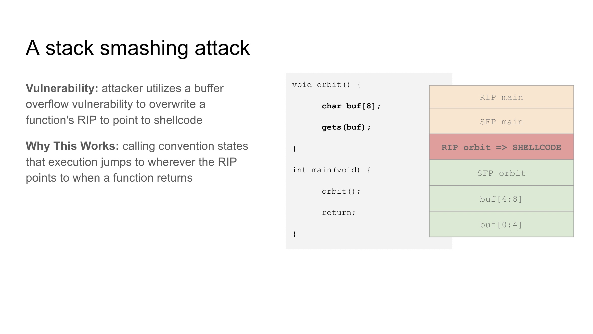

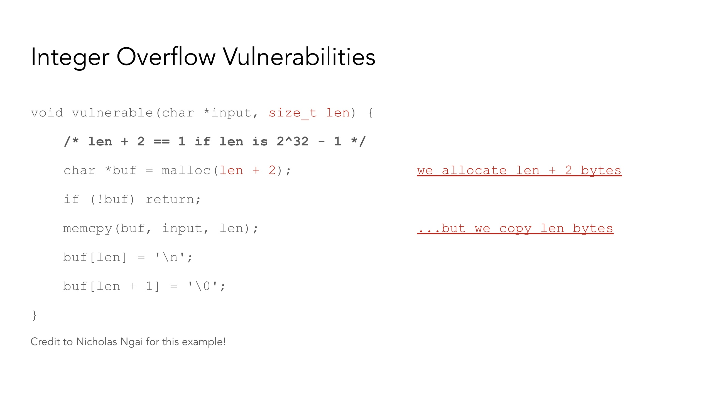 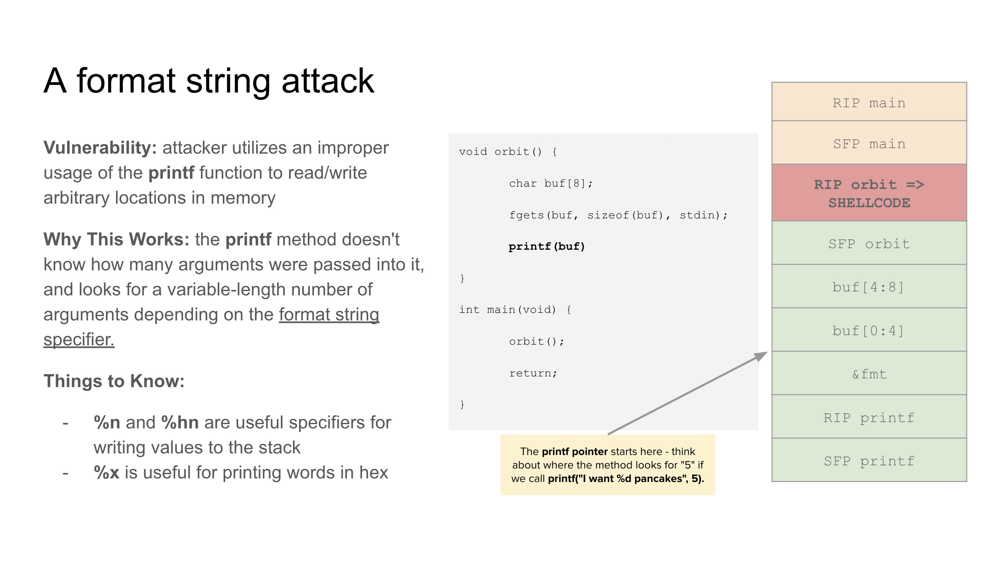
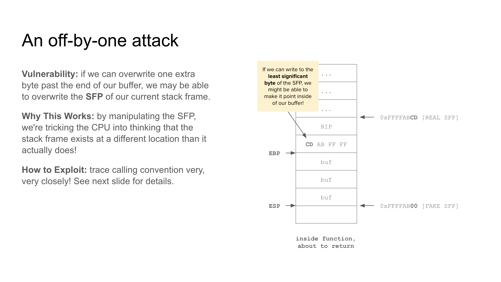 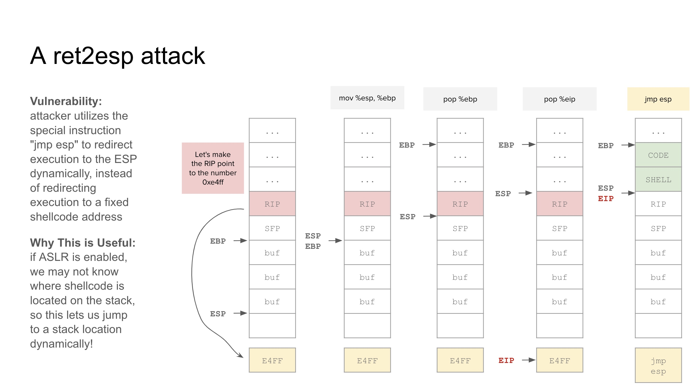
Content:
1. Security Principles
2. Memory Safety: x86 Assembly and Call Stack, Memory Safety Vulnerabilities, Mitigating Memory-Safety Vulnerabilities
3. Cryptography:
4. Web Security:
5. Network Security:
Summary: Always know your threat model-- the who and what. Consider human factors in security implementations-- keep tools fool proof and user friendly. No system is ever 100% secure, its a matter of resources. Don't put a 100 dollar lock on a dollar item, and vice versa. If an attack is inevitable always at least have detection of said attack when prevention is not possible. Layer defenses in depth. Always limit access to least privilege, give enough access to get the job done. Split up privilege so no one party has complete access. Takes multiple to launch the nuke. Ensure mediation, check all access points in and out. Never rely on obscurity for security-- the deets always get out. Use fail safe defaults-- meaning when a fail happens it better default to a safe space. Design security from the start don't try to back track. The TCB, the portion of the system that must operate correctly in order for the security goals of the system to be assured. Keep the principle of Time-of-Check To Time-Of-Use in mind.
Threat Model: a model of who your attacker is and what resources they have.
Common Assumptions that are taken into account for attackers:
The attacker can inter with your systems without anyone noticing.
The attacker has some general information about your system.
The attacker is persistent and lucky.
The attacker has the resources required to undertake the attack.
The attacker can coordinate several complex attacks across various systems.
Every system is a potential target.
Security systems must be usable by ordinary people and therefore must be designed to take into account the role that humans will play.
Takeaway: consider the tools that are presented to users, and try to make them fool-proof and as user-friendly as possible.
Security is often a cost-benefit analysis where someone needs to make a decision regarding how much security is worth.
A corollary of this principle is you should focus your energy on securing the weakest links. Security is like a chain: a system is only as secure as the weakest link. Attackers follow the path of least resistance, and they will attack the system at its weakest point.
A closely related principle is conservative design, which states that systems should be evaluated according to the worst security failure that is at all plausible, under assumptions favorable to the attacker.
If prevention is stopping an attack from taking place, detection is simply learning that the attack has taken place, and response would be doing something about the attack. The idea is that if you cannot prevent the attack from happening, you should at least be able to know that the attack has happened. Once you know that the attack has happened, you should find a way to respond, since detection without response is pointless.
When dealing with response, you should always assume that bad things will happen, and therefore prepare your systems for the worst case outcome.
Defense in Depth: defenses should be layered together so an attacker would have to breach all the defenses to successfully attack a system.
Beware of diminishing returns–if you’ve already built 100 walls, the 101st wall may not add enough additional protection to justify the cost of building it (security is economics).
Give a program the set of access privileges that it legitimately needs to do its job—but nothing more. Try to minimize how much privilege you give each program and system component.
Least privilege is an enormously powerful approach. It doesn’t reduce the probability of failure, but it can reduce the expected cost of failures. The less privilege that a program has, the less harm it can do if it goes awry or becomes subverted.
Split up privilege, so no one person or program has complete power. Require more than one party to approve before access is granted.
In summary, if you need to perform a privileged action, require multiple parties to work together to exercise that privilege, since it is more likely for a single party to be malicious than for all of the parties to be malicious and collude with one another.
When enforcing access control policies, make sure that you check every access to every object. This kind of thinking is helpful to detect where vulnerabilities could be. As such, you have to ensure that all access is monitored and protected. One way to accomplish this is through a reference monitor, which is a single point through which all access must occur.
Shannon’s Maxim states that the attacker knows the system that they are attacking.
“Security through obscurity” refers to systems that rely on the secrecy of their design, algorithms, or source code to be secure. The issue with this, however, is that it is extremely brittle and it is often difficult to keep the design of a system secret from a sufficiently motivated attacker. Historically, security through obscurity has a lousy track record: many systems that have relied upon the secrecy of their code or design for security have failed miserably.
As such, you should never rely on obscurity as part of your security. Always assume that the attacker knows every detail about the system that you are working with (including its algorithms, hardware, defenses, etc.)
erckhoff’s Principle, which states that cryptographic systems should remain secure even when the attacker knows all internal details of the system.
Choose default settings that “fail safe”, balancing security with usability when a system goes down. Ensure that if the security mechanisms fail or crash, they will default to secure behavior, not to insecure behavior.
Trying to retrofit security to an existing application after it has already been spec’ed, designed, and implemented is usually a very difficult proposition. At that point, you’re stuck with whatever architecture has been chosen, and you don’t have the option of decomposing the system in a way that ensures least privilege, separation of privilege, complete mediation, defense in depth, and other good properties. Backwards compatibility is often particularly painful, because you can be stuck with supporting the worst insecurities of all previous versions of the software.
In any system, the trusted computing base (TCB) is that portion of the system that must operate correctly in order for the security goals of the system to be assured. We have to rely on every component in the TCB to work correctly. However, anything that is outside the TCB isn’t relied upon in any way; even if it misbehaves or operates maliciously, it cannot defeat the system’s security goals. Generally, the TCB is made to be as small as possible since a smaller, simpler TCB is easier to write and audit.
TCB Design Principles:
Unbypassable: there must be no way to breach system security by bypassing the TCB.
Tamper-resistant: the TCB should be protected from tampering by anyone else.
Verifiable: It should be possible to verify the correctness of the TCB.
Design your system so that as much code as possible can be moved outside the TCB.
Benefits of TCBs: The notion of a TCB is a very powerful and pragmatic one as it allows a primitive yet effective form of modularity. It lets us separate the system into two parts: the part that is security-critical (the TCB), and everything else.
This is known as a Time-Of-Check To Time-Of-Use (TOCTTOU) vulnerability, because between the check and the use of whatever state was checked, the state somehow changed.
At the lowest level, computers store memory as individual bits, where each bit is either 0 or 1.
1 nibble = 4 bits
1 byte = 8 bits
1 word = 32 bits(on 32-bit architecture)
A "word" is the size of a pointer, which depends on your CPU architecture.
The compiler translates your C code into assembly instructions. 61c uses the RISC-V instruction set but in 161 we use x86, which is more commonly seen in the real world.
The assembler translates the assembly instructions from the compiler into machine code.
The linker resolves dependencies on external libraries. After the linker finishes linking external libraries, it outputs a binary executable of the program that you can run.
The user runs the executable, the loader sets up an address space in memory and runs the machine code instructions in the executable.
At runtime, the OS gives the program an address space to store any state necessary for program execution. Each byte has a unique address. The size of the address space depends on the OS and CPU architecture. In a 32 bit system address are 32 bits long, which means the address space has 2^32 bytes of memory.
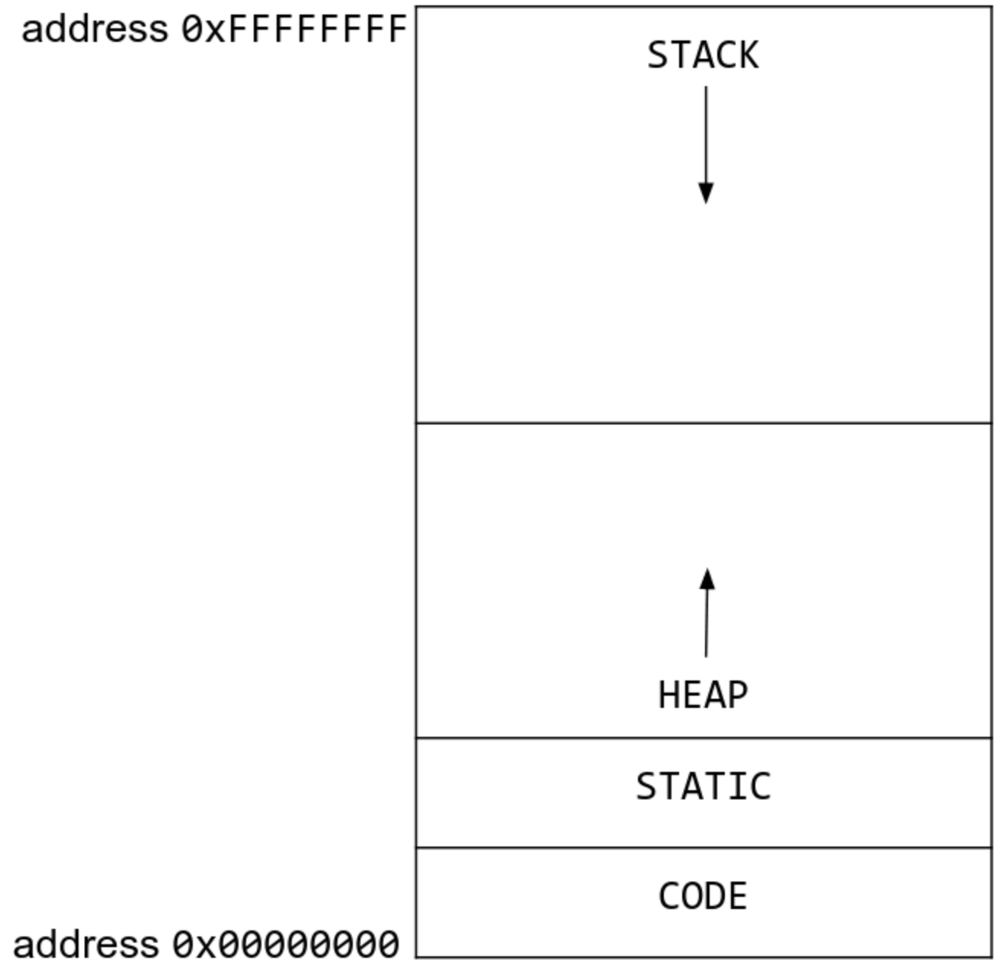
The code section contains executable instructions of the program. The assembler and linker output raw bytes that can be interpreted as machine code. These bytes are stored in the code section.
The static section contains constants and static variables that never change during program execution, and are usually allocated when the program starts.
The heap stores dynamically allocated data. When malloc is called in C, memory is allocated on the heap and persists until free is called. The heap starts at lower addresses and "grows up" to higher addresses as more memory is allocated.
The stack stores local variables and other information associated with function calls. The stack starts at higher addresses and "grows down" as more functions are called.
x86 is a Little Endian system this means when storing a word in memory the least significant byte is stored as the lowest address, and the most significant byte is stored at the highest address.
In addition to teh 2^32 bytes of memory in the address space, there are also registers, which store memory directly on the CPU. Each register can store one word. Unlike memory registers do not have addresses. Instead, registers are referred to by names. There are three special x86 registers that are relevant:
eip: the instruction pointer, stores that address fo teh machine instruction currently being executed. IN RISC-V this register is called the PC.
ebp: the base pointer, stores the address of the top of the current stack frame. IN RISC-V systems this register is called the FP.
esp: the stack pointer, stores the address of the bottom of the current stack frame. In RISC-V this register is called the SP.
eax and ebx are general purpose registers in x86
Note: The eip register points to the code section of memory while the ebp and esp registers typically point to stack memory.
When it is desirable to save a variable on the stack there are two steps to take. First allocated additional space on the stack by decrementing the esp. Next store the value in the newly allocated space. The x86 push instruction does both of these steps to add a value to the stack. To remove a value from the stack increments the esp register, in x86 the pop instruction does this. It also takes the value that was just popped and copies the value to a register. Note when we pop a value off the stack the bits of memory aren't removed but the memory space becomes undefined.
This class uses AT&T x86 syntax(since that is what GDB uses). This means that the destination register comes last; note that this is in contrast with RISc_v assembly where the destination register comes first. Suppose our assembly instruction was addl $0x*, %ebx; here, the opcode is addl, the source is $0x8, and the destination register is %ebx, so in pseudocode this can be read as EBX = EBX + 0x8.
References to registers are preceded with a percent sign, so if we wanted to reference eax, we would do so as %eax. Immediates are preceded with a dollar sign(i.e. $1, $0x4, etc.). Furthermore, memory references use parenthesis and can have immediate offsets; for example. 12(%esp) dereferences memory 12 bytes above the address contained in ESP. If parenthesis are used without an immediate offset, the offset can be thought of as an implicit 0.
When a function is called, the stack allocates extra space to store local variables and other information relevant to that function. The stack grows down, so this extra space will be at lower addresses in memory. Once the function returns, the space on the stack is freed up for future function calls. In a function call, the caller calls the callee. Program execution starts in the caller, moves to the callee as a result of the function call and then returns to the caller after the function call completes.
When a function call is made in x86 the three special registers-- eip, evp, esp --need to be updated. The eip needs to be changed to point to the instructions of the callee. The ebp and esp currently point to the top and bottom of the caller stack frame, respectively. Both registers need to be updated to point to the top and bottom of a new stack frame for the callee. When the function returns the old register values need to be restored, so that the rest of the caller function can execute. There are 11 steps to calling an x86 function and returning:
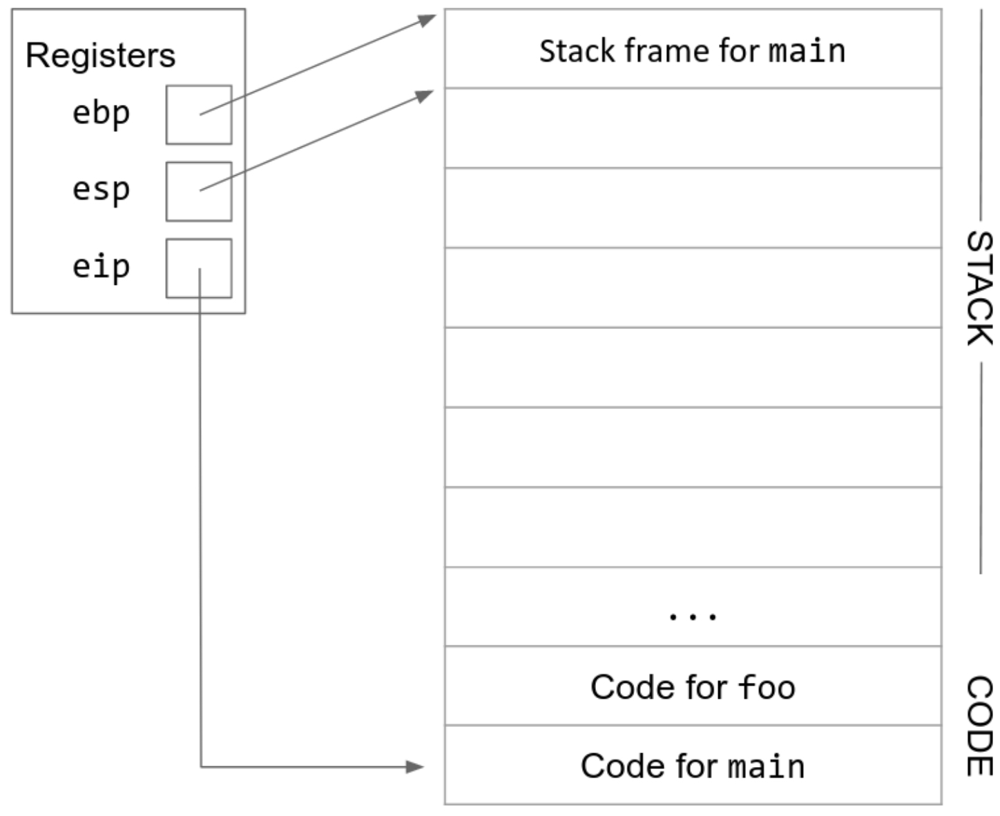
1. Push arguments onto the stack. RISC-V passes arguments by storing them in registers, but x86 passes arguments by pushing them onto the stack. Note that esp is decrements as we push arguments onto the stack. Arguments are pushed onto the stack in reverse order.
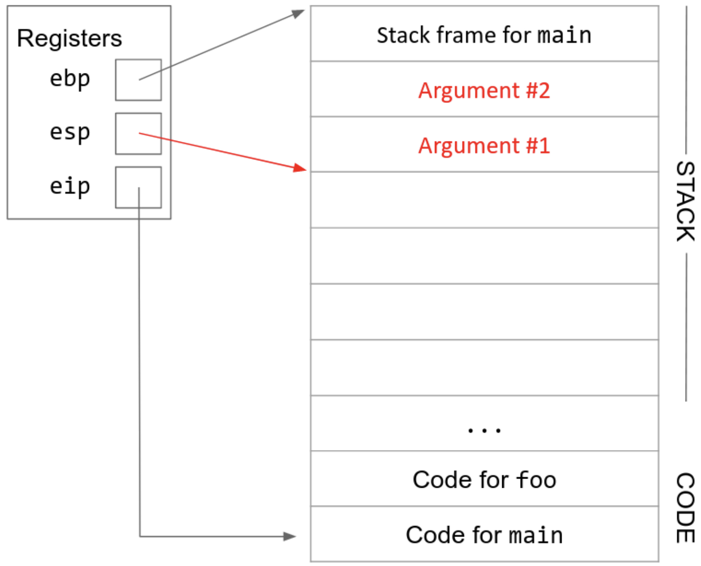
2. Push the old eip(rip) on the stack. Before changing the value of the eip register its needed to save the current value on the stack. When the eip is pushed to the stack its is called the old eip or the rip(return instruction pointer).
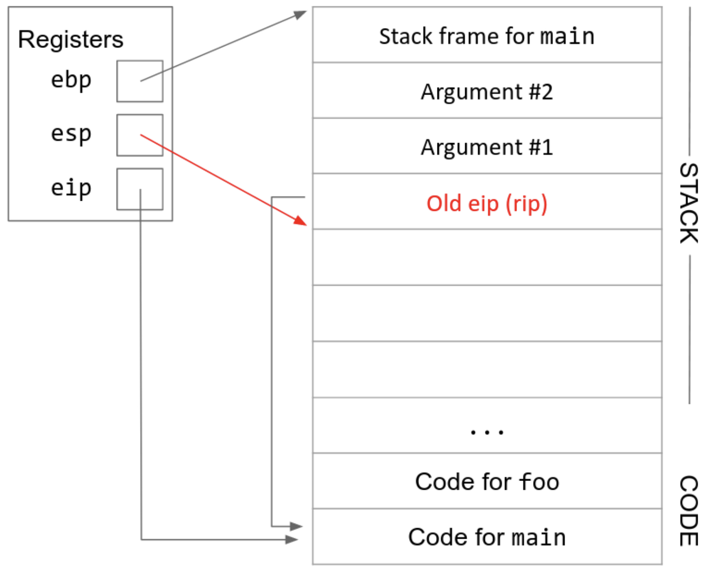
3. Move eip. Now that we've saved the old value of eip, we can safely change eip to point to the instructions for the callee function.
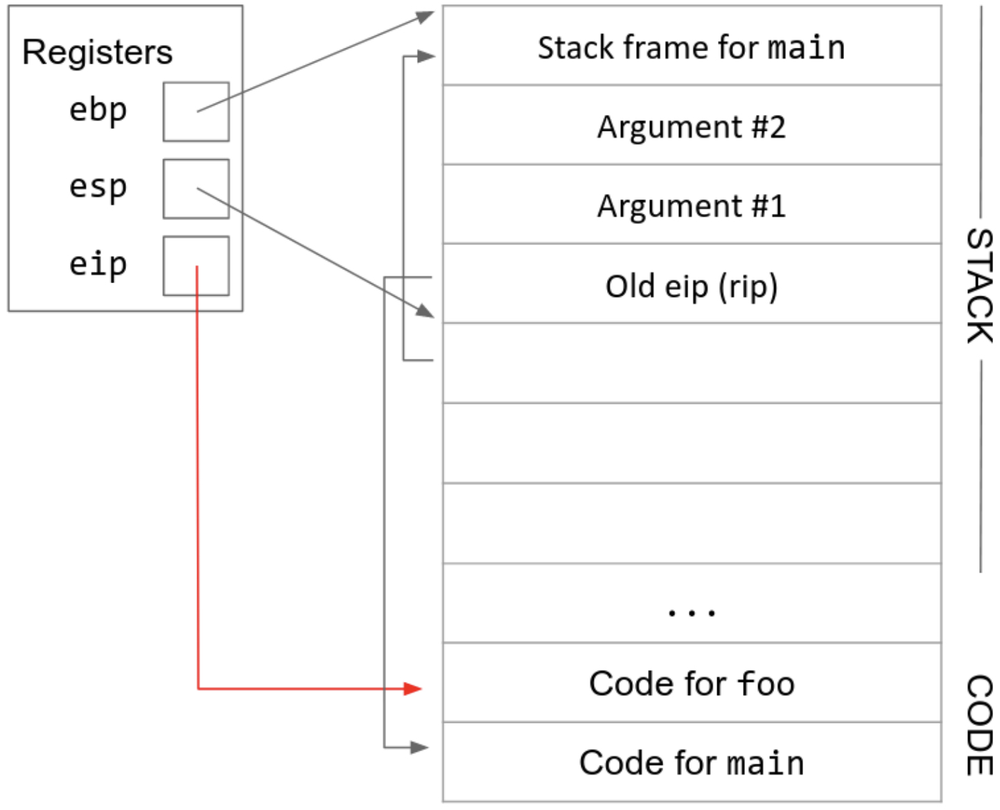
4. Push the old ebp(sfp) on the stack. Before changing the value in the ebp register, its needed to save the current value on the stack. Push the current ebp is pushed onto the stack its referred to as the old ebp or the sfp(saved frame pointer). Not that esp has been decremented because of pushing the ebp onto the stack.
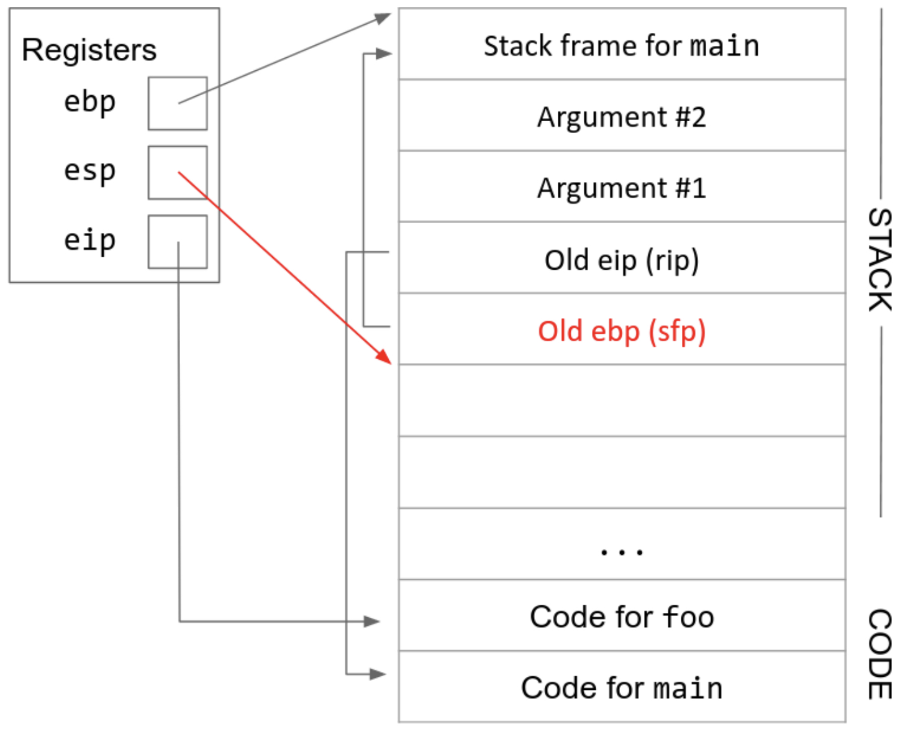
5. Move the ebp down. Now that we've saved the old value of ebp, we can safely change ebp to point to the top of the new stack frame. The top of the new stack frame is where esp is currently points since we are about to allocate new space below esp for the new stack frame.
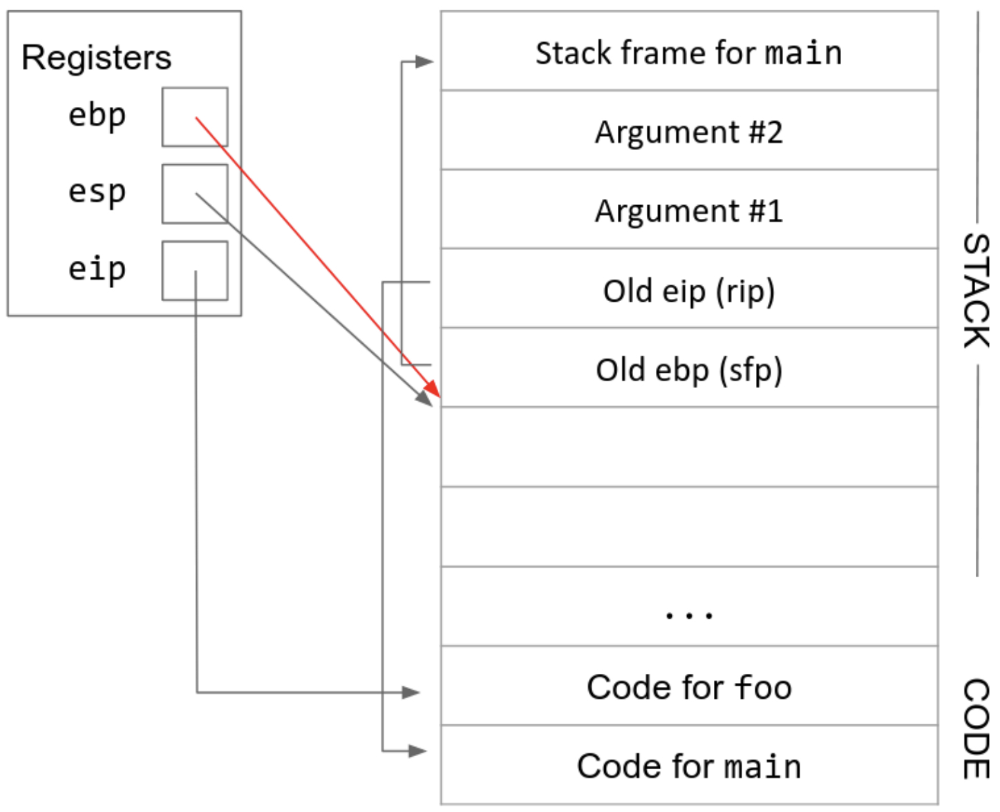
6. Move esp down. Now we can allocate new space for the new stack frame by decrementing esp. The compiler looks at the complexity of the function to determine how far esp should be decremented. For example, a function with only a few local variables doesn't require too much space on the stack, so esp will only be decremented by a few bytes.
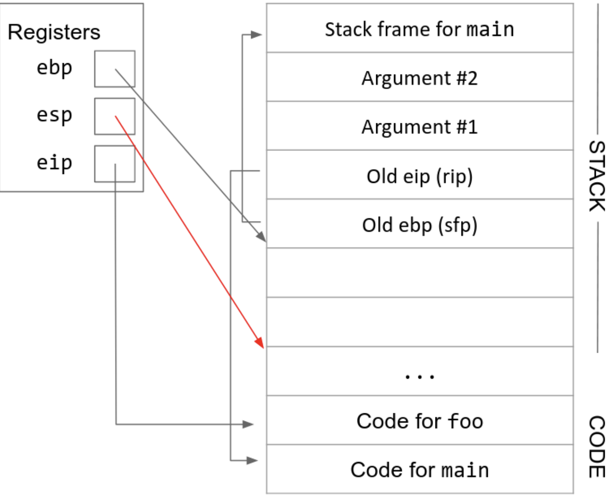
7. Execute the function. Local variables and any other necessary data can now be saved in the new stack frame. Additionally, since ebp is always pointing to the top of the stack frame, we can use it as a point of reference to find other variables on the stack. For example, the arguments will be located starting at the address stored in ebp, plus 8.
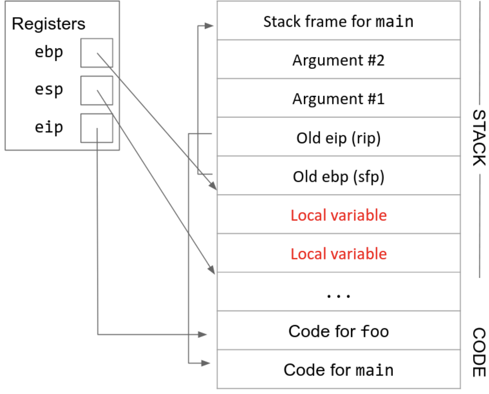
8. Move esp up. Once the function is ready to return, we increment esp to point to the top of the stack frame(ebp). This effectively erases the stack frame, since the stack frame is now located below esp. (Anything on the stack below the esp is undefined)
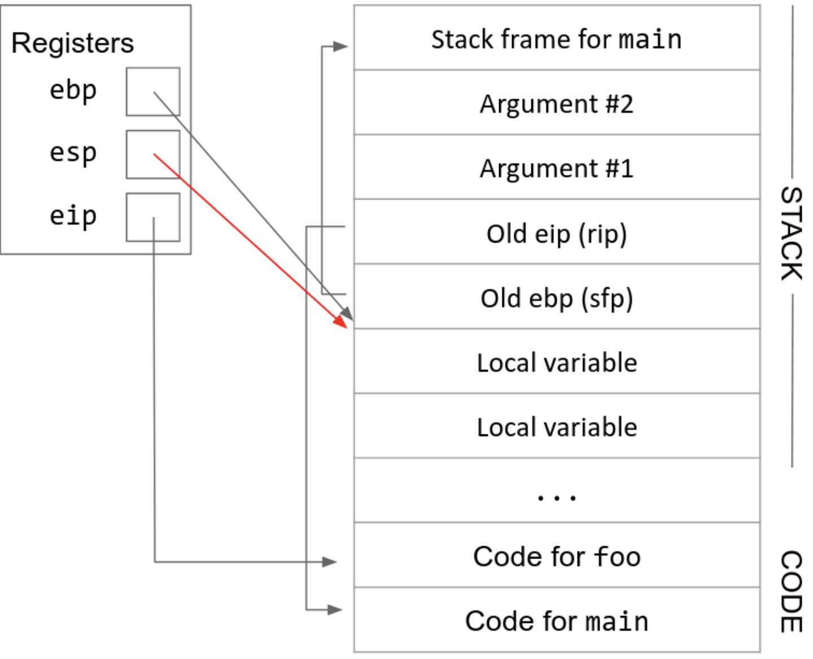
9. Restore the old ebp(sfp). The next value on the stack is the sfp, the old value of the ebp before we started executing the function. We pop the sfp off the stack and store it back into the ebp register. This returns ebp to its old value before the callee function was called.
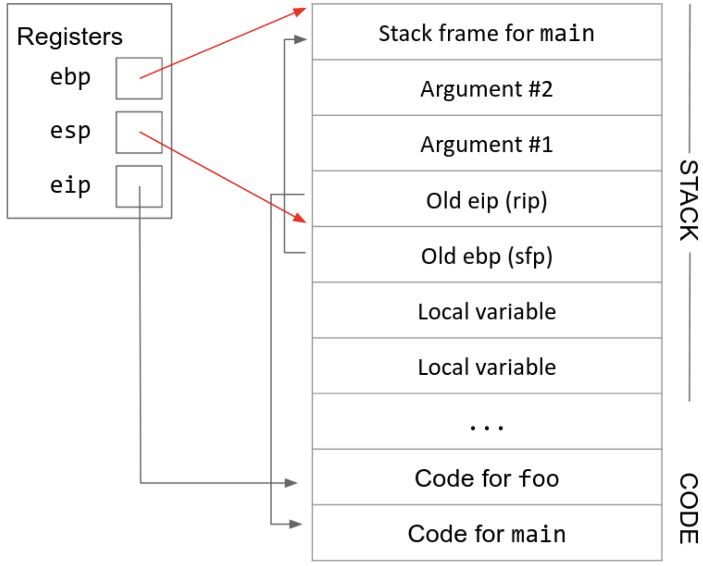
10. Restore the old eip(rip). The next value on the stack is the rip, the old value of eip before we started executing the function. we pop the rip off the stack and store it back into the register.
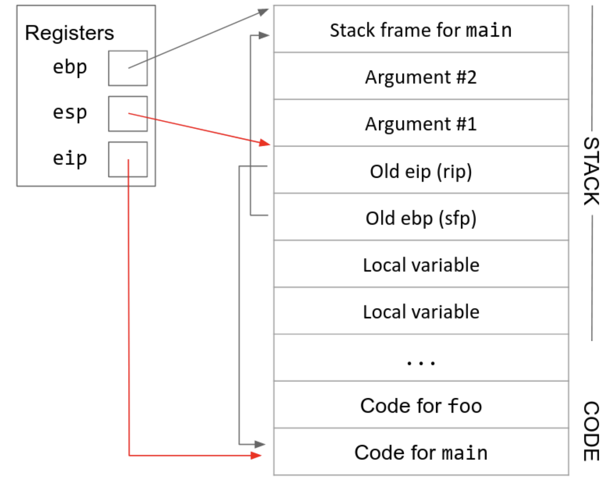
11. Remove arguments from the stack. Since the functin call is over, we don't need to store the arguments anymore. We can remove them by incrementing esp.
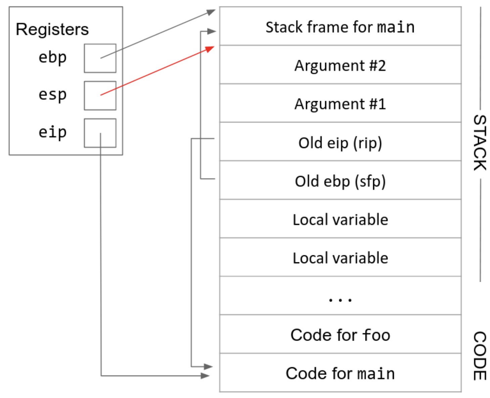
Buffer overflow vulnerabilities are a particular risk in C, and since C is an especially widely used systems programming language, you might not be surprised to hear that buffer overflows are one of the post pervasive kind of implementation flaws around. C is a low-level language, meaning that the programmer is always exposed to the bare machine, one of the reasons why C is such a popular systems language. A particular weakness in C is the absence of automatic bounds-checking for array or pointer accesses. For example, if the programmer declares an array char buffer[4], C will not automatically throw an error if the programmer tries to access buffer[5]. It is through this absence of automatic bounds-checking that buffer overflows take advantage of. A buffer overflow bug is one where the programmer fails to perform adequate bounds chekcs, triggering an out-of-bounds memory access that writes beyond the bounds of some meory region. Attackers can use these out-of-bounds memory accesses to corrupt the program's intended behavior.
Malicious code injection attack uses a buffer overflow to override a function pointer to point to malicious code. Malicious code injection attacks allows an attacker to seize control of the program. At the conclusion of the attack, the program is still running, but now it is executing code chosen by the attackers, rather than the original code. This type of attack are only possible when the code satisfies special conditions: the buffer that can be overflowed must be followed in memory by some security-critical data. Typically attacking the heap memory.
Stack smashing takes advantage of the way local variables are laid out on the stack. Stack smashing attacks exploit the x86 call convention. An attacker would write past bounds overwriting the sfp and rip. The rip is the pointer to the next instruction to execute, overwriting this allows for again malicious code injection. Suppose the malicious code didn't already exist in memory, and we have to inject it ourselves during the stack smashing attack. Sometimes this malicious code is called shellcode, because the malicious code is often written to spawn an interactive shell that lets the attacker perform arbitrary actions.
Bottom Line: If your program has a buffer overflow bug, you should assume that the bug is exploitable and an attacker can take control of your program.
When the printf() function executes, it looks for a format string modifier denoted by a "%" in its first arguments located 4 bytes above the rip of printf(). If it finds the modifier, it then looks 8 bytes above the rip for the "actual" argument. What happens when there is a mismatch in the number of format string modifiers in the first arguments and number of additional arguments? Such as "printf("x has the value %d, y has the value %d, z has the value %d \n", x, y);" The format string asks for 3 arguments but having three "%d" modifiers but the printf() function is only passed 2 additional arguments. The C compiler does not catch this error. As long as at least one additional argument is passed everything looks fine to the C compiler. Thus prinf() simply fetches arguments from the stack according to the number of format modifiers present. In cases of mismatch it will fetch some data from the stack that does not belong to the function call. Similar to how the %d format modifier makes the printf() function print the value located at the expected address, various string modifiers have different uses: %s->treat the argument as an address and print the string at that address up until the first null byte, %n->treat the argument as an address and write the number of characters that have been printed so far to that address, %c->treat the argument as a value and print it out as a character, %x look at the stack and read the first variable after the format string, %[b]u->print out [b] bytes starting from the argument.
Bottom Line: if your program has a format string vulnerability assume that the attacker cal learn any value stored in memory adn can take control of your program.
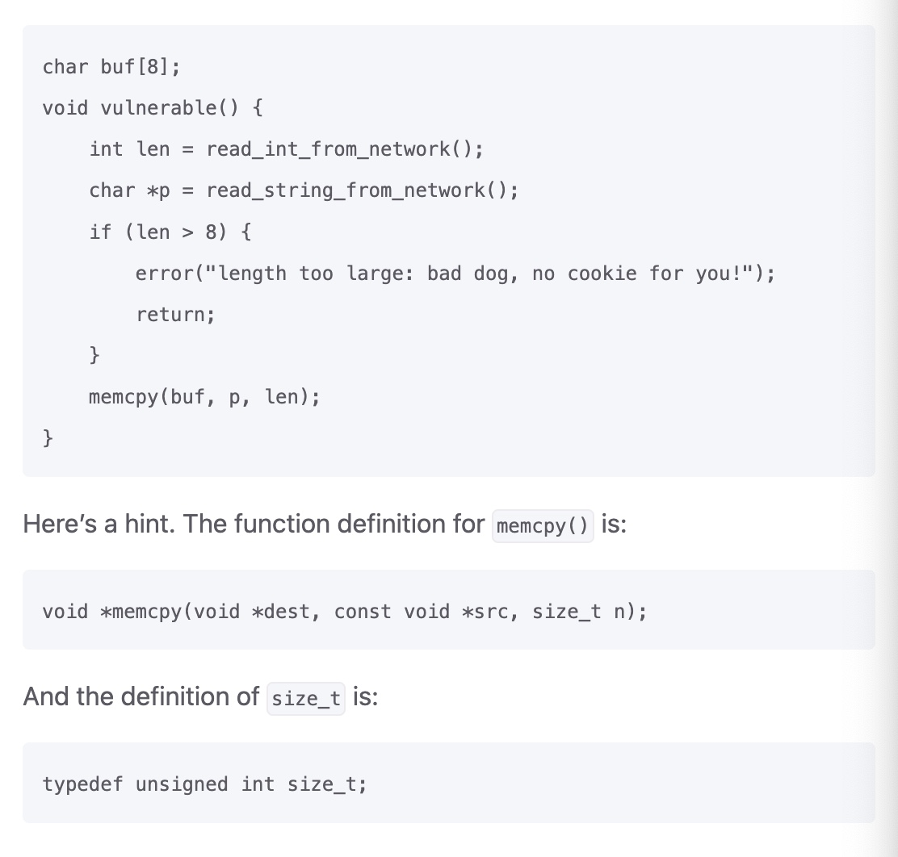
If the attacker provides a negative value for len, the if statement won't notice anything wrong and memcpy() will be executed with a negative third argument. C will cast this negative value to an unsigned int and it will become a very large positive integer. Thus memcpy() will copy a huge amount of memory into buf, overflowing the buffer.Note the C compiler won't warn about the type mismatch between the signed int and unsigned int; it silently inserts an implicit cast. This kind of bug can be hard to spot, because on the surface it appears that the programmer has applied the correct bounds checks, but they are flawed.
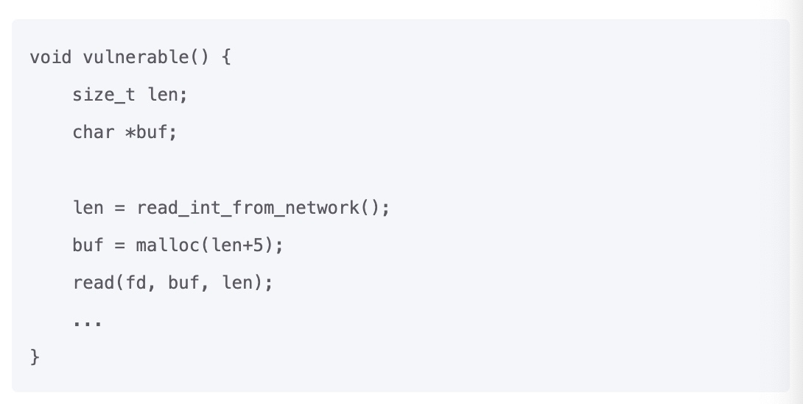
This code seems to avoid buffer overflow problems(indeed it allocates 5 more bytes than necessary). But, there is a subtle problem: len+5 can wrap around if len is too large. For instance, if len = 0xFFFFFFFF, then the value of len+5 is 4(on 42-bit platforms). In this case, the code allocates a 4-byte buffer and then writes a lot more than 4 bytes into it: a classic buffer overflow.
Off-by-one errors are very common in programming: for example, you might accidentally use <= instead of <, or you might accidentally start a loop at i=0 instead of i=1. As it turns out, even an off-by-one error can lead to dangerous memory safety vulnerabilities. Consider a buffer whose bounds checks are off by one.
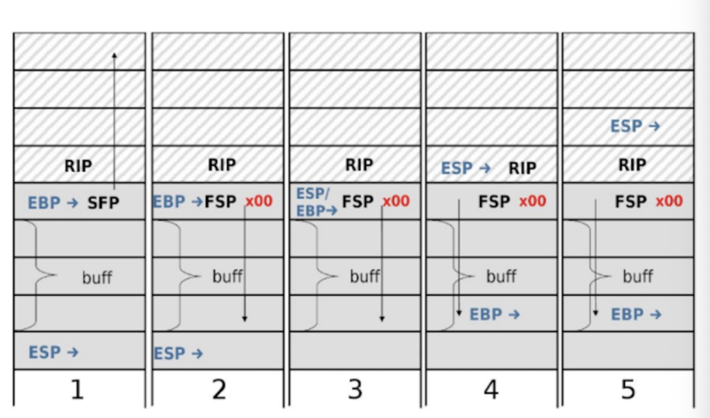
Step 1: This is what normal execution during a function looks like. The stack has the rip(saved eip), sfp(saved ebp), and the local variable buff. The esp register points to the bottom of the stack. The ebp register points to the sfp at the top of the stack. The sfp(saved ebp) points ot the ebp of the previous function, which is higher up in memory. The rip(saved eip) points to somewhere in the code section.
Step 2: We overwrite all of buff, plus the byte immediately after buff, which is the least significant byte of the sfp directly above buff. We can change the last byte of sfp so that the sfp points to somewhere inside buff. The sfp label becomes fsp here to indicate that it is now a forged sfp with the last byte changed. Eventually after your function finishes executing it returns and executes: mov %ebp %esp = change the esp register to point to wherever ebp is currently point to, pop %ebp = take the next value on the stack and place it in the ebp register and move esp up by 4 to delete this value off the stack, pop %eip = take the next value on the stack and place it in the eip register and move the exp up by 4 to delete this value off the stack.
Step 3: mov %ebp, %esp- esp now points where ebp is point which is the forged sfp.
Step 4: pop %ebp take the next value on the stack, the forged sfp, and place it in the ebp register. Now ebp is point inside the buffer.
Step 5: pop %eip take the next value on the stack, the rip, and place it in the eip register. Since we didn't maliciously change the rip, the old eip is correctly restored.
After step 5, nothing has changed exept that the ebp now points inside the buffer, This make sense: we only changed the sfp so when ebp is restored it will point to where the forged sfp was pointing(inside buffer). The key insight for this exploit is that one function return is not enough. However, eventually if a second function return happens, it will allow us to start executing instructions at an arbitrary location.
Step 6: move %ebp, %esp esp now points where ebp is pointing which is inside the buffer. At this point in normal execution both ebp and esp think that they are pointing at the sfp.
Step 7: pop %ebp take the next value on the stack(which the program thinks is the sfp but is actually some attacker-controlled value inside the buffer) and place it in the ebp register. The question mark here says that even though the attacker controls what gets placed in the ebp register, we don't care what the value actually is.
Step 8: pop %eip take the next value on the stack(which the program thinks is the rip but is actually some attacker-controlled value inside the buffer) and place it in the eip register. This is where you place the address of shellcode, since you control the values in buff, and the program is taking an address from buff and jumping there is execute instructions. Also, note that it is not enough to place the shellcode 4 bytes above where the forged sfp is points, You need to put the address of shellcode there, since the program will interpret that part of memory as the rip.
Buffer overflows, format string vulnerabilities, and other examples above are examples of memory safety bugs: cases where an attacker can read or write beyond the valid range of memory regions. Other examples of memory safety violations include using a dangling pointer(a pointer into a memory region that has been freed and is no longer valid) and double-free bugs(where a dynamically allocated object is explicitly freed multiple times). "Use after free" bugs, where an object or structure in memory is deallocated but still used. are particularly attractive targets for exploitation. Exploiting these vulnerabilities generally involve the attacker triggering the creation of two separate objects that, because of the use-after-free on the first object, actually share the same memory. The attacker can now use the second object to manipulate the interpretation of the first object.
Vulnerabilities Overview:
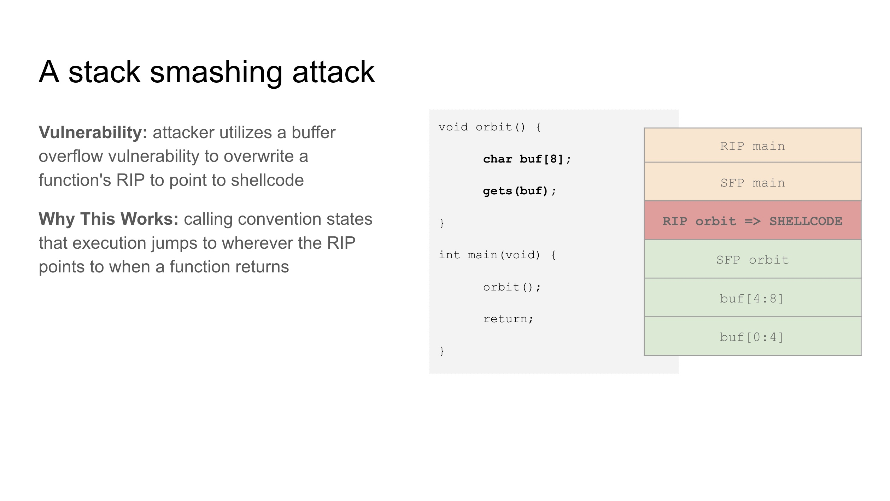
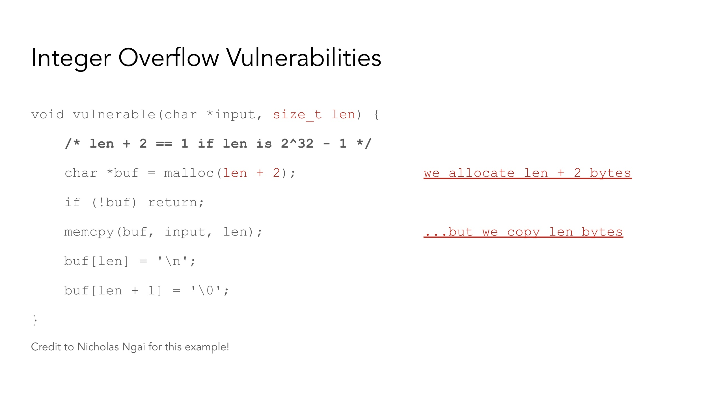
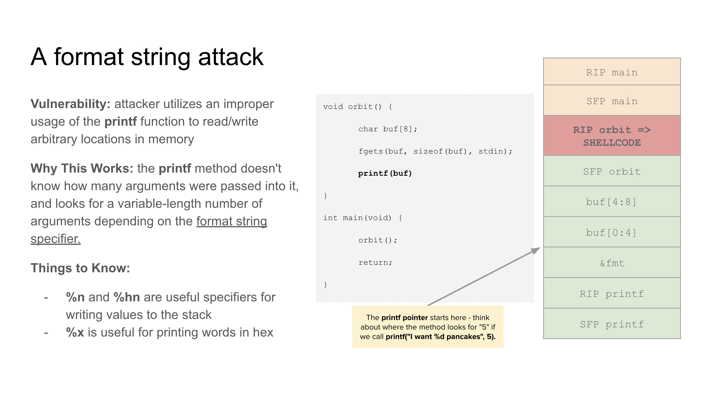
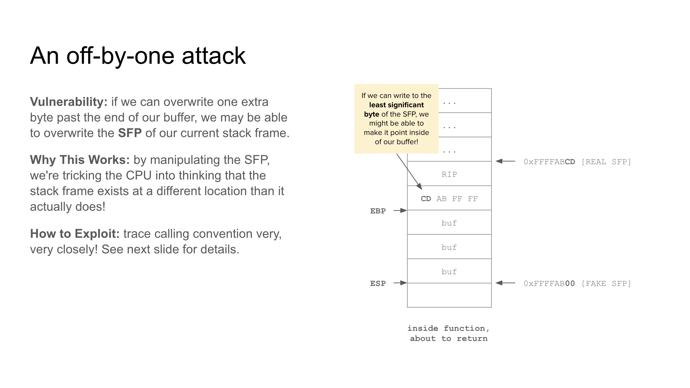
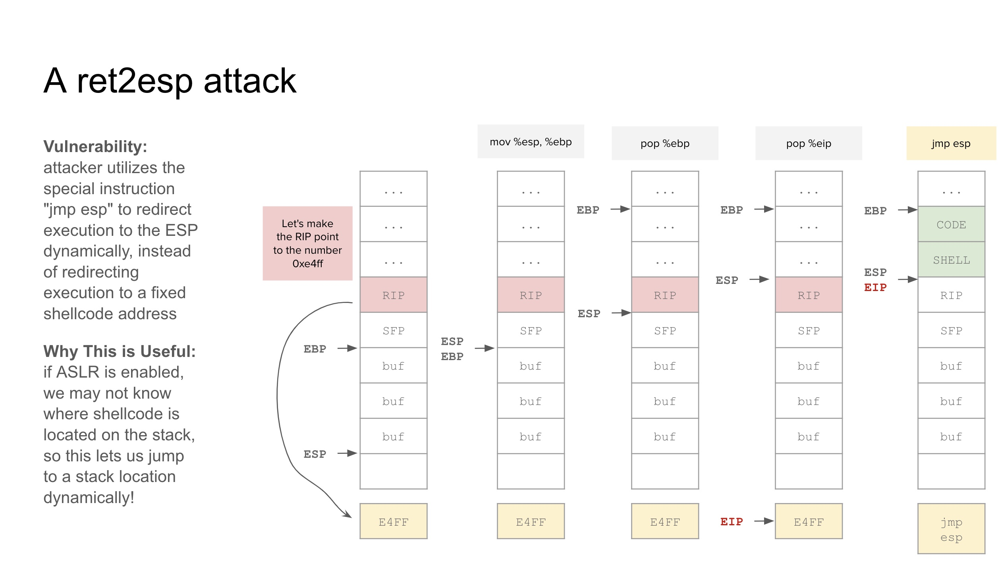
Some modern languages are designed to be intrinsically memory-safe, no matter what the programmer does. Java, Python, Go, Rust, Swift, and many other programming languages include a combination of compile-time and runtime checks that prevent memory errors from occurring. Using a memory safe language is the only way to stop 100% of memory safety vulnerabilities. In an ideal world, everyone would program in memory-safe languages and buffer overflow vulnerabilities would no longer exist. However, because of legacy code and perceived1 performance concerns, memory-unsafe languages such as C are still prevalent today.
One way to ensure memory safety is to carefully reason about memory accesses in your code, by defining pre-conditions and post-conditions for every function you write and using invariants to prove that these conditions are satisfied. Although it is a good skill to have, this process is painstakingly tedious and rarely used in practice, so it is no longer in scope for this class.
Another example of defending against memory safety vulnerabilities is writing memory-safe code through defensive programming and using safe libraries. Defensive programming is very similar to defining pre and post conditions for every written function, wherein you always add checks in your code just in case something could go wrong. For example, you would always check that a pointer is not null before dereferencing it, even if you are sure that the pointer is always going to be valid. However, as mentioned earlier, this relies a lot on programmer discipline and is very tedious to properly implement. As such, a more common method is to use safe libraries, which, in turn, use functions that check bounds so you don’t have to. For example, using fgets instead of gets, strncpy or strlcpy instead of strcpy, and snprintf instead of sprintf, are all steps towards making your code slightly more safe.
Yet another way to defend your code is to use tools to analyze and patch insecure code. Utilizing run-time checks that do automatic bound-checking, for example is an excellent way to help your code stay safe. If your check fails, you can direct it towards a controlled crash, ensuring that the attacker does not succeed. Hiring someone to look over your code for memory safety errors, though expensive, can prove to be extremely beneficial as well. You can also probe your own system for vulnerabilities, by subjecting your code to thorough tests. Fuzz testing, or testing with random inputs, testing corner cases, and using tools like Valgrind (to detect memory leaks), are all excellent ways to help test your code. Though it is pretty difficult to know whether you have tested your code “enough” to deem it safe, there are several code-coverage tools that can help you out.
Sometimes you might be forced to program in a memory-unsafe language, and you cannot reason about every memory access in your code. For example, you might be asked to update an existing C codebase that is so large that you cannot go through and reason about every memory access. In these situations, a good strategy is to compile and run code with code hardening defenses to make common exploits more difficult.
Code hardening defenses are mitigations: they try to make common exploits harder and cause exploits to crash instead of succeeding, but they are not foolproof. The only way to prevent all memory safety exploits is to use a memory-safe language. Instead, these mitigations are best thought of as defense-in-depth: they cannot prevent all attacks, but by including many different defenses in your code, you can prevent more attacks. Over the years, there has been a back-and-forth arms race between security researchers developing new defenses and attackers developing new ways to subvert those defenses.
The rest of this section goes into more detail about some commonly-used code hardening defenses, and techniques for subverting those defenses. In many cases, using multiple mitigations produces a synergistic effect: one mitigation on its own can be bypassed, but a combination of multiple mitigations forces an attacker to discover multiple vulnerabilities in the target program.
Many common buffer overflow exploits involve the attacker writing some machine code into memory, and then redirecting the program to execute that injected code. For example, one of the stack smashing attacks in the previous section ([shellcode] + [4 bytes of garbage] + [address of buf]) involves the attacker writing machine code into memory and overwriting the rip to cause the program to execute that code.
One way to defend against this category of attacks is to make some portions of memory non-executable. What this means is that the computer should not interpret any data in these regions as CPU instructions. You can also think of it as not allowing the eip to ever contain the address of a non-executable part of memory.
Modern systems separate memory into pages in order to support virtual memory (see 61C or 162 to learn more). To defend against memory safety exploits, each page of memory is set to either be writable or executable, but not both. If the user can write to a page in memory, then that page of memory cannot be interpreted as machine instructions. If the program can execute a page of memory as machine instructions, then the user cannot write to that page.
This defense stops the stack smashing attack in the previous section where the attacker wrote machine code into memory. Because the attacker wrote machine code to a page in memory, that page cannot be executed as machine instructions, so the attack no longer works.
This defense has several names in practice, including W\^X (Write XOR Execute), DEP (Data Execution Prevention), and the NX bit (no-execute bit).
Non-executable pages do not stop an attacker from executing existing code in memory. Most C programs import libraries with thousands or even million lines of instructions. All of these instructions are marked as executable (and non-writable), since the programmer may want to call these functions legitimately.
An attacker can exploit this by overwriting the rip with the address of a C library function. For example, the execv function lets the attacker start executing the instructions of some other executable.
Some of these library functions may take arguments. For example, execv takes a string with the filename of the program to execute. Recall that in x86, arguments are passed on the stack. This means that an attacker can carefully place the desired arguments to the library function in the right place on the stack, so that when the library function starts to execute, it will look on the stack for arguments and find the malicious argument placed there by the attacker. The argument is not being run as code, so non-executable pages will not stop this attack.
We can take this idea of returning to already-loaded code and extend it further to now execute arbitrary code. Return-oriented programming is a technique that overwrites a chain of return addresses starting at the RIP in order to execute a series of “ROP gadgets” which are equivalent to the desired malicious code. Essentially, we are constructing a custom shellcode using pieces of code that already exist in memory. Instead of executing an existing function, like we did in “Return to libc”, with ROP you can execute your own code by simply executing different pieces of different code. For example, imagine we want to add 4 to the value currently in the EDX register as part of a larger program. In loaded memory, we have the following functions:
foo:
...
0x4005a1
0x4005a3
0x4005a4
...
bar:
...
0x400604
0x400608
0x40060a
0x40060b
To emulate the add $0x4, %edx instruction, we could move the value in EDX to EAX using the gadget in foo and then add 4 to EAX using the gadget in bar! If we set the first return address to 0x004005a1 and the second return address to 0x00400604, we produce the desired result. Each time we jump to ROP gadget, we eventually execute the ret instruction and then pop the next return address off the stack, jumping to the next gadget. We just have to keep track that our desired value is now in a different register, and because we execute a pop %ebx instruction in bar before we return, we also have to remember that the value in EBX has been updated after executing these gadgets—but these are all behaviors that we can account for using standard compiler techniques. In fact, so-called “ROP compilers” exist to take an existing vulnerable program and a desired execution flow and generate a series of return addresses.
The general strategy for executing ROPs is to write a chain of return addresses at the RIP to achieve the behavior that we want. Each return address should point to a gadget, which is a small set of assembly instructions that already exist in memory and usually end in a ret instruction (note that gadgets are not functions, they don’t need to start with a prologue or end with an epilogue!). The gadget then executes its instructions and ends with a ret instruction, which tells the code to jump to the next address on the stack, thus allowing us to jump to the next gadget!
If the code base is big enough, meaning that the code imports enough libraries, there are usually enough gadgets in memory for you to be able to run any shellcode that you want. In fact, ROP compilers exist on the Internet that will automatically generate an ROP chain for you based on a target binary and desired malicious code! ROP has become so common that non-executable pages are no longer a huge issue for attackers nowadays; while having writable and executable pages makes an attacker’s life easier, not a lot of effort has to be put in to subvert this defense mechanism.
In the old days, miners would protect themselves against toxic gas buildup in the mine by bringing a caged canary into the mine. These particularly noisy birds are also sensitive to toxic gas. If toxic gas builds up in the mine, the canary dies first, which gives the miners a warning sign that the air is toxic and they should evacuate immediately. The canary in the coal mine is a sacrificial animal: the miners don’t expect it to survive, but its death acts as a warning to save the lives of the miners.
We can use this same idea to prevent against buffer overflow attacks. When we call a function, the compiler places a known dummy value, the stack canary, on the stack. This canary value is not used by the function at all, so it should stay unchanged throughout the duration of the function. When the function returns, the compiler checks that the canary value has not been changed. If the canary value has changed, then just like the canary in the mine dying, this is evidence that something bad has happened, and the program will crash before any further damage is done.
Like the canary in the coal mine, the stack canary is a sacrifical value: it has no purpose in the function execution and nothing bad happens if it is changed, but the canary changing acts as a warning that someone may be trying to exploit our program. This warning lets us safely crash the program instead of allowing the exploit to succeed.
The stack canary uses the fact that many common stack smashing attacks involve overflowing a local variable to overwrite the saved registers (sfp and rip) directly above. These attacks often write to consecutive, increasing addresses in memory, without any gaps. In other words, if the attacker starts writing at a buffer and wants to overwrite the rip, they must overwrite everything in between the buffer and the rip. The stack canary is placed directly above the local variables and directly below the saved registers (sfp and rip):
Suppose an attacker wants to overflow a local variable to overwrite the rip on the stack, and the vulnerability only allows the attacker to write to consecutive, increasing addresses in memory. Then the attacker must overwrite the stack canary before overwriting the rip, since the rip is located above the buffer in the stack.
Before the function returns and starts executing instructions at the rip, the compiler will check whether the canary value is unchanged. If the attacker has attempted to overwrite the rip, they will have also changed the canary value. The program will conclude that something bad is happening and crash before the attacker can take control. Note that the stack canary detects an attack before the function returns.
The stack canary is a random value generated at runtime. The canary is 1 word long, so it is 32 bits long in 32-bit architectures. In Project 1, the canary is 32 completely random bits. However, in reality, stack canaries are usually guaranteed to contain a null byte (usually as the first byte). This lets the canary defend against string-based memory safety exploits, such as vulnerable calls to strcpy that read or write values from the stack until they encounter a null byte. The null byte in the canary stops the strcpy call before it can copy past the canary and affect the rip.
The canary value changes each time the program is run. If the canary was the same value each time the program was run, then the attacker could run the program once, write down the canary value, then run the program again and overwrite the canary with the correct value. Within a single run of the program, the canary value is usually the same for each function on the stack.
Modern compilers automatically add stack canary checking when compiling C code. The performance overhead from checking stack canaries is negligible, and they defend against many of the most common exploits, so there is really no reason not to include stack canaries when programming in a memory-unsafe language.
Stack canaries make buffer overflow attacks harder for an attacker, but they do not defend programs against all buffer overflow attacks. There are many exploits that the stack canary cannot detect:
Stack canaries can’t defend against attacks outside of the stack. For example, stack canaries do nothing to protect vulnerable heap memory.
Stack canaries don’t stop an attacker from overwriting other local variables. Consider the authenticated example from the previous section. An attacker overflowing a buffer to overwrite the authenticated variable never actually changes the canary value.
Some exploits can write to non-consecutive parts of memory. For example, format string vulnerabilities let an attacker write directly to the rip without having to overwrite everything between a local variable and the rip. This lets the attacker write "around" the canary and overwrite the rip without changing the value of the canary.
Additionally, there are several techniques for defeating the stack canary. These usually involve the attacker modifying their exploit to overwrite the canary with its original value. When the program returns, it will see that the canary is unchanged, and the program won’t detect the exploit.
Guess the canary: On a 32-bit architecture, the stack canary usually only has 24 bits of entropy (randomness), because one of the four bytes is always a null byte. If the attacker runs the program with an exploit, there is a roughly 1 in 2^24 chance that the the value the attacker is overwriting the canary with matches the actual canary value. Although the probability of success is low on one try, the attacker can simply run the program 2^24 times and successfully exploit the program at least once with high probability.
Depending on the setting, it may be easy or hard to run a program and inject an exploit 2^24 times. If each try takes 1 second, the attacker would need to try for over 100 days before they succeed. If the program is configured to take exponentially longer to run each time the attacker crashes it, the attacker might never be able to try enough times to succeed. However, if the attacker can try thousands of times per second, then the attacker will probably succeed in just a few hours.
On a 64-bit architecture, the stack canary has 56 bits of randomness, so it is significantly harder to guess the canary value. Even at 1,000 tries per second, an attacker would need over 2 million years on average to guess the canary!
Leak the canary: Sometimes the program has a vulnerability that allows the attacker to read parts of memory. For example, a format string vulnerability might let the attacker print out values from the stack. An attacker could use this vulnerability to leak the value of the canary, write it down, and then inject an exploit that overwrites the canary with its leaked value. All of this can happen within a single run of the program, so the canary value doesn’t change on program restart.
As we saw earlier, stack canaries help detect if an attacker has modified the rip or sfp pointers by storing a secret value on the stack and checking if the secret value has been modified. As it turns out, we can generalize this idea of using secrets on the stack to detect when an attacker modifies any pointer on the stack.
Pointer authentication takes advantage of the fact that in a 64-bit architecture, many bits of the address are unused. A 64-bit address space can support 2^64 bytes, or 18 exabytes of memory, but we are a long way off from having a machine with this much memory. A modern CPU might support a 4 terabyte address space, which means 42 bits are needed to address all of memory. This still leaves 22 unused bits in every address and pointer (the top 22 bits in the address are always 0).
Consider using these unused bits to store a secret like the stack canary. Any time we need to store an address on the stack, the CPU first replaces the 22 unused bits with some secret value, known as the pointer authentication code, or PAC, before pushing the value on the stack. When the CPU reads an address off the stack, it will check that the PAC is unchanged. If the PAC is unchanged, then the CPU replaces the PAC with the original unused bits and uses the address normally. However, if the PAC has been changed, this is a warning sign that the attacker has overwritten the address! The CPU notices this and safely crashes the program.
As an example, suppose the rip of a function in a 64-bit system is 0x0000001234567899. The address space for this architecture is 40 bits, which means the top 24 bits (3 bytes) are always 0 for every address. Instead of pushing this address directly on the stack, the CPU will first replace the 3 unused bytes with a PAC. For example, if the PAC is 0xABCDEF, then the address pushed on the stack is 0xABCDEF1234567899.
This address (with the secret value inserted) is invalid, and dereferencing it will cause the program to crash. When the function returns and the program needs to start executing instructions at the rip, the CPU will read this address from the stack and check that the PAC 0xABCDEF is unchanged. If the PAC is correct, then the CPU replaces the secret with the original unused bits to make the address valid again. Now the CPU can start executing instructions at the original rip 0x0000001234567899.
Now, an attacker trying to overwrite the rip would need to know the PAC in order to overwrite the rip with the address of some attacker shellcode. If the attacker overwrites the PAC with an incorrect value, the CPU will detect this and crash the program.
We can strengthen this defense even further. Since it is the CPU’s job to add and check the PAC, we can ask the CPU to use a different PAC for every pointer stored on the stack. However, we don’t want to store all these PACs on the CPU, so we’ll use some special math to help us generate secure PACs on the fly.
Consider a special function f ( K E Y , A D D R E S S ) . The function f takes a secret key K E Y and an address A D D R E S S , and outputs a PAC by performing some operation on these two inputs. This function is deterministic, which means if we supply the same key and address twice, it will output the same secret value twice. This function is also secure: an attacker who doesn’t know the value of K E Y cannot output secret values of their own.
Now, instead of using the same PAC for every address, we can generate a different PAC for each address we store in memory. Every time an address needs to be stored in memory, the CPU runs f with the secret key and the address to generate a unique secret value. Every time an address from memory needs to be dereferenced, the CPU runs f again with the secret key and the address to re-generate the PAC, and checks that the generated value matches the value in memory. The CPU only has to remember the secret key, because all the secret values can be re-generated by running f again with the key and the address.
Using a different PAC for every address makes this defense extremely strong. An attacker who can write to random parts of memory can defeat the stack canary, but cannot easily defeat pointer authentication: they could try to leave the PAC untouched, but because they’ve changed the address, the old secret value will no longer check out. The CPU will run f on the attacker-generated address, and the output will be different from the old secret value (which was generated by running f on the original address). The attacker also cannot generate the correct secret value for their malicious address, because they don’t know what the secret key is. Finally, an attacker could try to leak some addresses and secret values from memory, but knowing the PACs doesn’t help the attacker generate a valid PAC for their chosen malicious address.
With pointer authentication enabled, an attacker is never able to overwrite pointers on the stack (including the rip) without generating the corresponding secret for the attacker’s malicious address. Without knowing the key, the attacker is forced to guess the correct secret value for their address. For a 20-bit secret, the attacker has a 1 in 2^20 chance of success.
Another way to subvert pointer authentication is to find a separate vulnerability in the program that allows the attacker to trick the program into creating a validated pointer. The attacker could also try to discover the secret key stored in the CPU, or find a way to subvert the function f used to generate the secret values.
Recall the stack smashing attacks from the previous section, where we overwrote the rip with the address of some malicious code in memory. This required knowing the exact address of the start of the malicious code. ASLR is a mitigation that tries to make predicting addresses in memory more difficult.
Although we showed that C memory is traditionally arranged with the code section starting at the lowest address and the stack section starting at the highest address, nothing is stopping us from shifting or rearranging the memory layout. With ASLR, each time the program is run, the beginning of each section of memory is randomly chosen. Also, if the program imports libraries, we can also randomize the starting addresses of each library’s source code.
ASLR causes the absolute addresses of variables, saved registers (sfp and rip), and code instructions to be different each time the program is run. This means the attacker can no longer overwrite some part of memory (such as the rip) with a constant address. Instead, the attacker has to guess the address of their malicious instructions. Since ASLR can shuffle all four segments of memory, theoretically, certain attacks can be mitigated. By randomizing the stack, the attacker cannot place shellcode on the stack without knowing the address of the stack. By randomizing the heap, the attacker, similarly, cannot place shellcode on the heap without knowing the address of the heap. Finally, by randomizing the code, the attacker cannot construct an ROP chain or a return-to-libc attack without knowing the address of the code.
There are some constraints to randomizing the sections of memory. For example, segments usually need to start at a page boundary. In other words, the starting address of each section of memory needs to be a multiple of the page size (typically 4096 bytes in a 32-bit architecture).
Modern systems can usually implement ASLR with minimal overhead because they dynamically link libraries at runtime, which requires each segment of memory to be relocatable.
Guess the address: Because of the constraints on address randomization, a 32-bit system will sometimes only have around 16 bits of entropy for address randomization. In other words, the attacker can guess the correct address with a 1 in 2^16 probability, or the attacker can try the exploit 2^16 times and expect to succeed at least once. This is less of a problem on 64-bit systems, which have more entropy available for address randomization.
Like guessing the stack canary, the feasibility of guessing addresses in ASLR depends on the attack setting. For example, if each try takes 1 second, then the attacker can make 2^16 attempts in less than a day. However, if each try after a crash takes exponentially longer, 2^16 attempts may become infeasible.
Leak the address: Sometimes the program has a vulnerability that allows the attacker to read parts of memory. For example, a format string vulnerability might let the attacker print out values from the stack. The stack often stores absolute addresses, such as pointers and saved registers (sfp and rip). If the attacker can leak an absolute address, they may be able to determine the absolute address of other parts of memory relative to the absolute address they leaked.
Note that ASLR randomizes absolute addresses by changing the start of sections of memory, but it does not randomize the relative addresses of variables. For example, even if ASLR is enabled, the rip will still be 4 bytes above the sfp in a function stack frame. This means that an attacker who leaks the absolute address of the sfp could deduce the address of the rip (and possibly other values on the stack).
We can use multiple mitigations together to force the attacker to find multiple vulnerabilities to exploit the program; this is a process known as synergistic protection, where one mitigation helps strengthen another mitigation. For example, combining ASLR and non-executable pages results in an attacker not being able to write their own shellcode, because of non-executable pages, and not being able to use existing code in memory, because they don’t know the addresses of that code (ASLR). Thus, to defeat ASLR and non-executable pages, the attacker needs to find two vulnerabilities. First, they need to find a way to leak memory and reveal the address location (to defeat ASLR). Next, they need to find a way to write to memory and write an ROP chain (to defeat non-executable pages).
Understanding cryptography at a conceptual level will give you good intuition for how industrial systems use cryptography in practice. However, cryptography in practice is very tricky to get right. Actual real-world cryptographic implementations require great attention to detail and have hundreds of possible pitfalls. For example, private information might leak out through various side-channels, random number generators might go wrong, and cryptographic primitives might lose all security if you use them the wrong way. We won’t have time to teach all of those details and pitfalls to you in CS 161, so you should never implement your own cryptography using the algorithms we teach you in this class.
The word “cryptography” comes from the Latin roots crypt, meaning secret, and graphia, meaning writing. So cryptography is quite literally the study of how to write secret messages.
Schemes for sending secret messages go back to antiquity. 2,000 years ago, Julius Caesar employed what’s today referred to as the “Caesar cypher,” which consists of permuting the alphabet by shifting each letter forward by a fixed amount. For example, if Caesar used a shift by 3 then the message “cryptography” would be encoded as “fubswrjudskb”. With the development of the telegraph (electronic communication) during the 1800s, the need for encryption in military and diplomatic communications became particularly important. The codes used during this “pen and ink” period were relatively simple since messages had to be decoded by hand. The codes were also not very secure, by modern standards.
The second phase of cryptography, the “mechanical era,” was the result of a German project to create a mechanical device for encrypting messages in an unbreakable code. The resulting Enigma machine was a remarkable feat of engineering. Even more remarkable was the massive British effort during World War II to break the code. The British success in breaking the Enigma code helped influence the course of the war, shortening it by about a year, according to most experts. There were three important factors in the breaking of the Enigma code. First, the British managed to obtain a replica of a working Enigma machine from Poland, which had cracked a simpler version of the code. Second, the Allies drew upon a great deal of brainpower, first with the Poles, who employed a large contingent of mathematicians to crack the structure, and then from the British, whose project included Alan Turing, one of the founding fathers of computer science. The third factor was the sheer scale of the code-breaking effort. The Germans figured that the Enigma was well-nigh uncrackable, but what they didn’t figure on was the unprecedented level of commitment the British poured into breaking it, once codebreakers made enough initial progress to show the potential for success. At its peak, the British codebreaking organization employed over 10,000 people, a level of effort that vastly exceeded anything the Germans had anticipated. They also developed electromechanical systems that could, in parallel, search an incredible number of possible keys until the right one was found.
Modern cryptography is distinguished by its reliance on mathematics and electronic computers. It has its early roots in the work of Claude Shannon following World War II. The analysis of the one-time pad (discussed in the next chapter) is due to Shannon. The early 1970s saw the introduction of a standardized cryptosystem, DES, by the National Institute for Standards in Technology (NIST). DES answered the growing need for digital encryption standards in banking and other businesses. The decade starting in the late 1970s then saw an explosion of work on a computational theory of cryptography.
Alice, Bob, Eve, and Mallory:
Two recurring members of the cast of characters in cryptography are Alice and Bob, who wish to communicate securely as though they were in the same room or were provided with a dedicated, untappable line. However, they only have available a telephone line or an Internet connection subject to tapping by an eavesdropping adversary, Eve. In some settings, Eve may be replaced by an active adversary Mallory, who can tamper with communications in addition to eavesdropping on them.
Keys:
The most basic building block of any cryptographic system (or cryptosystem) is the key. The key is a secret value that helps us secure messages. Many cryptographic algorithms and functions require a key as input to lock or unlock some secret value. There are two main key models in modern cryptography. In the symmetric key model, Alice and Bob both know the value of a secret key, and must secure their communications using this shared secret value. In the asymmetric key model, each person has a secret key and a corresponding public key. You might remember RSA encryption from CS 70, which is an asymmetric-key encryption scheme.
Confidentiality, Integrity, Authenticity:
Confidentiality is the property that prevents adversaries from reading our private data. If a message is confidential, then an attacker does not know its contents. You can think about confidentiality like locking and unlocking a message in a lockbox. Alice uses a key to lock the message in a box and then sends the message (in the locked box) over the insecure channel to Bob. Eve can see the locked box, but cannot access the message inside since she does not have a key to open the box. When Bob receives the box, he is able to unlock it using the key and retrieve the message. Most cryptographic algorithms that guarantee confidentiality work as follows: Alice uses a key to encrypt a message by changing it into a scrambled form that the attacker cannot read. She then sends this encrypted message over the insecure channel to Bob. When Bob receives the encrypted message, he uses the key to decrypt the message by changing it back into its original form. We sometimes call the message plaintext when it is unencrypted and ciphertext when it is encrypted. Even if the attacker can see the encrypted ciphertext, they should not be able to decrypt it back into the corresponding plaintext–only the intended recipient, Bob, should be able to decrypt the message.
Integrity is the property that prevents adversaries from tampering with our private data. If a message has integrity, then an attacker cannot change its contents without being detected.
Authenticity is the property that lets us determine who created a given message. If a message has authenticity, then we can be sure that the message was written by the person who claims to have written it.
You can think about cryptographic algorithms that ensure integrity and authenticity as adding a seal on the message that is being sent. Alice uses the key to add a special seal, like a piece of tape on the envelope, on the message. She then sends the sealed message over the unsecure channel. If Mallory tampers with the message, she will break the tape on the envelope, and therefore break the seal. Without the key, Mallory cannot create her own seal. When Bob receives the message, he checks that the seal is untampered before unsealing the envelope and revealing the message. Most cryptographic algorithms that guarantee integrity and authenticity work as follows: Alice generates a tag or a signature on a message. She sends the message with the tag to Bob. When Bob receives the message and the tag, he verifies that the tag is valid for the message that was sent. If the attacker modifies the message, the tag should no longer be valid, and Bob’s verification will fail. This will let Bob detect if the message has been altered and is no longer the original message from Alice. The attacker should not be able to generate valid tags for their malicious messages. A related property that we may want our cryptosystem to have is deniability. If Alice and Bob communicate securely, Alice might want to publish a message from Bob and show it to a judge, claiming that it came from Bob. If the cryptosystem has deniability, there is no cryptographic proof available to guarantee that Alice’s published message came from Bob. For example, consider a case where Alice and Bob use the same key to generate a signature on a message, and Alice publishes a message with a valid signature. Then the judge cannot be sure that the message came from Bob–the signature could have plausibly been created by Alice.
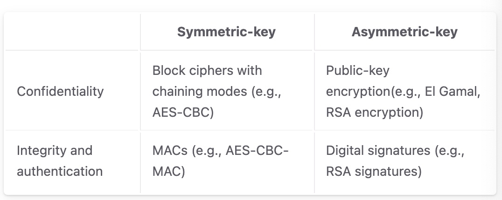
In symmetric-key encryption, Alice uses her secret key to encrypt a message, and Bob uses the same secret key to decrypt the message.
In the symmetric-key setting, message authentication codes (MACs) provide integrity and authenticity. Alice uses the shared secret key to generate a MAC on her message, and Bob uses the same secret key to verify the MAC. If the MAC is valid, then Bob can be confident that no attacker modified the message, and the message actually came from Alice.
In asymmetric(public-key) encryption, Bob generates a matching public key and private key, and shares the public key with Alice (but does not share his private key with anyone). Alice can encrypt her message under Bob’s public key, and then Bob will be able to decrypt using his private key. If these schemes are secure, then no one except Alice and Bob should be able to learn anything about the message Alice is sending.
In the asymmetric-key setting, public-key signatures (also known as digital signatures) provide integrity and authenticity. Alice generates a matching public key and private key, and shares the public key with Bob (but does not share her private key with anyone). Alice computes a digital signature of her message using her private key, and appends the signature to her message. When Bob receives the message and its signature, he will be able to use Alice’s public key to verify that no one has tampered with or modified the message, and that the message actually came from Alice.
Other cryptographic primitives:
Cryptographic hashes provide a one way digest: They enable someone to condense a long message into a short sequence of what appear to be random bits. Cryptographic hashes are irreversible, so you can’t go from the resulting hash back to the original message but you can quickly verify that a message has a given hash.
Many cryptographic systems and problems need a lot of random bits. To generate these we use a pseudo random number generator, a process which takes a small amount of true randomness and stretches it into a long sequence that should be indistinguishable from actual random data.
Key exchange schemes (e.g. Diffie-Hellman key exchange) allow Alice and Bob to use an insecure communication channel to agree on a shared random secret key that is subsequently used for symmetric-key encryption.
Cryptosystems should remain secure even when the attacker knows all internal details of the system. The key should be the only thing that must be kept secret, and the system should be designed to make it easy to change keys that are leaked (or suspected to be leaked). If your secrets are leaked, it is usually a lot easier to change the key than to replace every instance of the running software. (This principle is closely related to Shannon’s Maxim: Don’t rely on security through obscurity.)
Eve has managed to intercept a single encrypted message and wishes to recover the plaintext (the original message). This is known as a ciphertext-only attack.
Eve has intercepted an encrypted message and also already has some partial information about the plaintext, which helps with deducing the nature of the encryption. This case is a known plaintext attack. In this case Eve’s knowledge of the plaintext is partial, but often we instead consider complete knowledge of one instance of plaintext.
Eve can capture an encrypted message from Alice to Bob and re-send the encrypted message to Bob again. This is known as a replay attack. For example, Eve captures the encryption of the message “Hey Bob’s Automatic Payment System: pay Eve $$100$” and sends it repeatedly to Bob so Eve gets paid multiple times. Eve might not know the decryption of the message, but she can still send the encryption repeatedly to carry out the attack.
Eve can trick Alice to encrypt arbitrary messages of Eve’s choice, for which Eve can then observe the resulting ciphertexts. (This might happen if Eve has access to the encryption system, or can generate external events that will lead Alice to sending predictable messages in response.) At some other point in time, Alice encrypts a message that is unknown to Eve; Eve intercepts the encryption of Alice’s message and aims to recover the message given what Eve has observed about previous encryptions. This case is known as a chosen-plaintext attack.
Eve can trick Bob into decrypting some ciphertexts. Eve would like to use this to learn the decryption of some other ciphertext (different from the ciphertexts Eve tricked Bob into decrypting). This case is known as a chosen-ciphertext attack.
A combination of the previous two cases: Eve can trick Alice into encrypting some messages of Eve’s choosing, and can trick Bob into decrypting some ciphertexts of Eve’s choosing. Eve would like to learn the decryption of some other ciphertext that was sent by Alice. (To avoid making this case trivial, Eve is not allowed to trick Bob into decrypting the ciphertext sent by Alice.) This case is known as a chosen-plaintext/ciphertext attack, and is the most serious threat model.
Today, we usually insist that our encryption algorithms provide security against chosen-plaintext/ciphertext attacks, both because those attacks are practical in some settings, and because it is in fact feasible to provide good security even against this very powerful attack model. However, for simplicity, this class will focus primarily on security against chosen-plaintext attacks. The story of the Enigma gives one possible justification for this assumption: given how widely the Enigma was used, it was inevitable that sooner or later the Allies would get their hands on an Enigma machine, and indeed they did.
In this section, we will build symmetric-key encryption schemes that guarantee confidentiality. Because we are in the symmetric key setting, in this section we can assume that Alice and Bob share a secret key that is not known to anyone else. Later we will see how Alice and Bob might securely exchange a shared secret key over an insecure communication channel, but for now you can assume that only Alice and Bob know the value of the secret key. For modern schemes, we are going to assume that all messages are bitstrings, which is a sequence of bits, 0 or 1 (e.g. 1101100101010101). Text, images, and most other forms of communication can usually be converted into bitstrings before encryption, so this is a useful abstraction.
A more formal, rigorous definition of confidentiality is: the ciphertext C should give the attacker no additional information about the message M . In other words, the attacker should not learn any new information about M beyond what they already knew before seeing C (seeing C should not give the attacker any new information).
We can further formalize this definition by designing an experiment to test whether the attacker has learned any additional information. Consider the following experiment: Alice has encrypted and sent one of two messages, either M 0 or M 1 , and the attacker, Eve, has no idea which was sent. Eve tries to guess which was sent by looking at the ciphertext. If the encryption scheme is confidential, then Eve’s probability of guessing which message was sent should be 1 / 2 , which is the same probability as if she had not intercepted the ciphertext at all, and was instead guessing at random.
In summary, our definition of confidentiality says that even if Eve can trick Alice into encrypting some messages, she still cannot distinguish whether Alice sent M 0 or M 1 in the experiment. This definition is known as indistinguishability under chosen plaintext attack, or IND-CPA. We can use an experiment or game, played between the adversary Eve and the challenger Alice, to formally prove that a given encryption scheme is IND-CPA secure or show that it is not IND-CPA secure.
The IND-CPA game works as follows:
The adversary Eve chooses two different messages, M 0 and M 1 , and sends both messages to Alice.
Alice flips a fair coin. If the coin is heads, she encrypts M 0 . If the coin is tails, she encrypts M 1 . Formally, Alice chooses a bit b ∈ { 0 , 1 } uniformly at random, and then encrypts M b . Alice sends the encrypted message E n c ( K , M b ) back to Eve.
Eve is now allowed to ask Alice for encryptions of messages of Eve’s choosing. Eve can send a plaintext message to Alice, and Alice will always send back the encryption of the message with the secret key. Eve is allowed to repeat this as many times as she wants. Intuitively, this step is allowing Eve to perform a chosen-plaintext attack in an attempt to learn something about which message was sent.
After Eve is finished asking for encryptions, she must guess whether the encrypted message from step 2 is the encryption of M 0 or M 1 .
If Eve can guess which message was sent with probability > 1 / 2 , then Eve has won the game. This means that Eve has learned some information about which message was sent, so the scheme is not IND-CPA secure. On the other hand, if Eve cannot do any better than guess with 1 / 2 probability, then Alice has won the game. Eve has learned nothing about which message was sent, so the scheme is IND-CPA secure.
The messages M 0 and M 1 must be the same length. In almost all practical cryptosystems, we allow ciphertexts to leak the length of the plaintext. Why? If we want a scheme that doesn’t reveal the length of the plaintext, then we would need every ciphertext to be the same length. If the ciphertext is always n bits long, then we wouldn’t be able to encrypt any messages longer than n bits, which makes for a very impractical system. You could make n very large so that you can encrypt most messages, but this would mean encrypting a one-bit message requires an enormous n -bit ciphertext. Either way, such a system would be very impractical in real life, so we allow cryptosystems to leak the length of the plaintext.
Eve is limited to a practical number of encryption requests. In practice, some schemes may be vulnerable to attacks but considered secure anyway, because those attacks are computationally infeasible. For example, Eve could try to brute-force a 128-bit secret key, but this would take 2 128 computations. If each computation took 1 millisecond, this would take 10 28 years, far longer than the age of our solar system. These attacks may be theoretically possible, but they are so inefficient that we don’t need to worry about attackers who try them. To account for these computationally infeasible attacks in the IND-CPA game, we limit Eve to a practical number of encryption requests. One commonly-used measure of practicality is polynomially-bounded runtime: any algorithm Eve uses during the game must run in O ( n k ) time, for some constant k .
Eve only wins if she has a non-negligible advantage. Consider a scheme where Eve can correctly which message was sent with probability 1 / 2 + 1 / 2 128 . This number is greater than 1 / 2 , but Eve’s advantage is 1 / 2 128 , which is astronomically small. In this case, we say that Eve has negligible advantage–the advantage is so small that Eve cannot use it to mount any practical attacks. For example, the scheme might use a 128-bit key, and Eve can break the scheme if she guesses the key (with probability 1 / 2 128 ). Although this is theoretically a valid attack, the odds of guessing a 128-bit key are so astronomically small that we don’t need to worry about it. The exact definition of negligible is beyond the scope of this class, but in short, Eve only wins the IND-CPA game if she can guess which message was sent with probability greater than 1 / 2 + n , where n is some non-negligible probability.
You might have noticed that in step 3, there is nothing preventing Eve from asking Alice for the encryption of M 0 or M 1 again. This is by design: it means any deterministic scheme is not IND-CPA secure, and it forces any IND-CPA secure scheme to be non-deterministic. Informally, a deterministic scheme is one that, given a particular input, will always produce the same output. For example, the Caesar Cipher that was seen in the previous chapter is a deterministic scheme since giving it the same input twice will always produce the same output (i.e. inputting “abcd” will always output “cdef” when we shift by 2). As we’ll see later, deterministic schemes do leak information, so this game will correctly classify them as IND-CPA insecure.
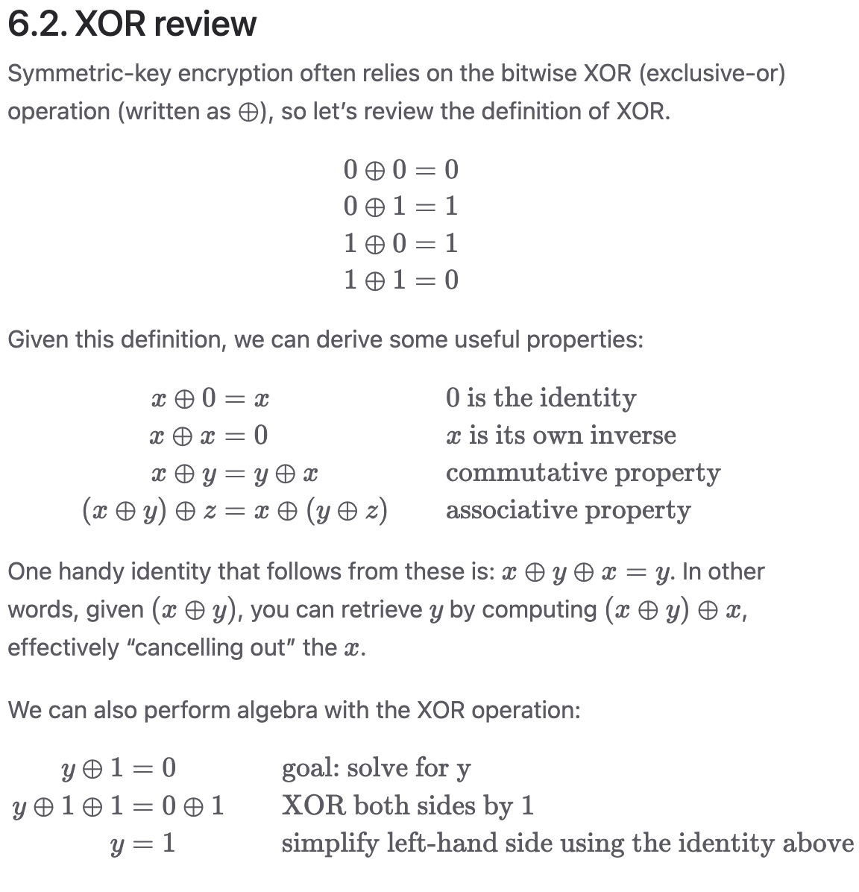
The first symmetric encryption scheme we’ll look at is the one-time pad (OTP). The one time pad is a simple and idealized encryption scheme that helps illustrate some important concepts, though as we will see shortly, it is impractical for real-world use.
In the one-time pad scheme, Alice and Bob share an n -bit secret key K = k 1 ⋯ k n where the bits k 1 , … k n are picked uniformly at random
Suppose Alice wishes to send the n-bit message M = m 1 ⋯ m n .
The desired properties of the encryption scheme are: 1--It should scramble up the message, i.e., map it to a ciphertext C = c 1 ⋯ c n AND 2--Given knowledge of the secret key K , it should be easy to recover M from C AND 3--Eve, who does not know K , should get no information about M
Encryption in the one-time pad is very simple:
Key generation: Alice and Bob pick a shared random key K
Encryption algorithm: C = M ⊕ K
Decryption algorithm: M = C ⊕ K .
Proof: For a fixed choice of plaintext M , every possible value of the ciphertext C can be achieved by an appropriate and unique choice of the shared key K : namely K = M ⊕ C . Since each such key value K is equally likely, it follows that C is also equally likely to be any n -bit string. Thus Eve sees a uniformly random n bit string no matter what the plaintext message was, and thus gets no information about which of the two messages was encrypted.
The one time pad has a major drawback. As its name suggests, the shared key cannot be reused to transmit another message M ′ . If the key K is reused to encrypt two messages M and M ′ , then Eve can take the XOR of the two ciphertexts C = M ⊕ K and C ′ = M ′ ⊕ K to obtain C ⊕ C ′ = M ⊕ M ′ . This gives partial information about the two messages. In particular, if Eve happens to learn M , then she can deduce the other message M ′ . In other words, given M ⊕ M ′ and M , she can calculate M ′ = ( M ⊕ M ′ ) ⊕ M . Actually, in this case, she can reconstruct the key K , too.
Eve sends two messages, M 0 and M 1 to the challenger. The challenger randomly chooses one message to encrypt and sends it back to Eve. At this point, Eve knows she has received either M 0 ⊕ K or M 1 ⊕ K , depending on which message was encrypted. Eve is now allowed to ask for the encryption of arbitrary messages, so she queries the challenger for the encryption of M 0 . The challenger is using the same key for every message, so Eve will receive M 0 ⊕ K . Eve can now compare this value to the encryption she is trying to guess: if the value matches, then Eve knows that the challenger encrypted M 0 and sent M 0 ⊕ K . If the value doesn’t match, then Eve knows that the challenger encrypted M 1 and sent M 1 ⊕ K . Thus Eve can guess which message the challenger encrypted with 100% probability! This is greater than 1 / 2 probability, so Eve has won the IND-CPA game, and we have proven that the one-time pad scheme with key reuse is insecure.
Consequently, the one-time pad is not secure if the key is used to encrypt more than one message. This makes it impractical for almost all real-world situations–if Alice and Bob want to encrypt an n -bit message with a one-time pad, they will first need to securely send each other a new, previously unused n -bit key. But if they’ve found a method to securely exchange an n -bit key, they could have just used that same method to exchange the n -bit message
Intuitively, a block cipher transforms a fixed-length, n -bit input into a fixed-length n -bit output. The block cipher has 2 k different settings for scrambling, so it also takes in a k -bit key as input to determine which scrambling setting should be used. Each key corresponds to a different scrambling setting. The idea is that an attacker who doesn’t know the secret key won’t know what mode of scrambling is being used, and thus won’t be able to decrypt messages encrypted with the block cipher. Block cipher is deterministic.
A block cipher has two operations: encryption takes in an n -bit plaintext and a k -bit key as input and outputs an n -bit ciphertext. Decryption takes in an n -bit ciphertext and a k -bit key as input and outputs an n -bit plaintext
In mathematical notation, the block cipher can be described as follows. There is an encryption function E : { 0 , 1 } k × { 0 , 1 } n → { 0 , 1 } n . This notation means we are mapping a k -bit input (the key) and an n -bit input (the plaintext message) to an n -bit output (the ciphertext). Once we fix the key K , we get a function mapping n bits to n bits: E K : { 0 , 1 } n → { 0 , 1 } n defined by E K ( M ) = E ( K , M ) . E K is required to be a permutation on the n -bit strings, in other words, it must be an invertible (bijective) function. The inverse mapping of this permutation is the decryption algorithm D K . In other words, decryption is the reverse of encryption: D K ( E K ( M ) ) = M .
The block cipher as defined above is a category of functions, meaning that there are many different implementations of a block cipher. Today, the most commonly used block cipher implementation is called Advanced Encryption Standard (AES). It was designed in 1998 by Joan Daemen and Vincent Rijmen, two researchers from Belgium, in response to a competition organized by NIST. AES uses a block length of n = 128 bits and a key length of k = 128 bits. It can also support k = 192 or k = 256 bit keys, but we will assume 128-bit keys in this class. It was designed to be extremely fast in both hardware and software.
Block ciphers, including AES, are not IND-CPA secure on their own because they are deterministic. In other words, encrypting the same message twice with the same key produces the same output twice. The strategy that an adversary, Eve, uses to break the security of AES is exactly the same as the strategy from the one-time pad with key reuse. Eve sends M 0 and M 1 to the challenger and receives either E ( K , M 0 ) or E ( K , M 1 ) . She then queries the challenger for the encryption of M 0 and receives E ( K , M 0 ) . If the two encryptions she receives from the challenger are the same, then Eve knows the challenger encrypted M 0 and sent E ( K , M 0 ) . If the two encryptions are different, then Eve knows the challenger encrypted M 1 and sent E ( K , M 1 ) . Thus Eve can win the IND-CPA game with probability 100% > 1 / 2 , and the block cipher is not IND-CPA secure.
Although block ciphers are not IND-CPA secure, they have a desirable security property that will help us build IND-CPA secure symmetric encryption schemes: namely, a block cipher is computationally indistinguishable from a random permutation. In other words, for a fixed key K , E K “behaves like” a random permutation on the n -bit strings.
The computational indistinguishability property of AES gives us a strong security guarantee: given a single ciphertext C = E K ( M ) , an attacker without the key cannot learn anything about the original message M . If the attacker could learn something about M , then AES would no longer be computationally indistinguishable: in the experiment from before, Eve could feed M into the box and see if given only the output from the box, she can learn something about M . If Eve learns something about M , then she knows the output came from a block cipher. If Eve learns nothing about M , then she knows the output came from a random permutation. However, since we believe that AES is computationally indistinguishable from random, we can say that an attacker who receives a ciphertext learns nothing about the original message. There is no proof that AES is computationally indistinguishable from random, but it is believed to be computationally indistinguishable. After all these years, the best known attack is still exhaustive key search, where the attacker systematically tries decrypting some ciphertext using every possible key to see which one gives intelligible plaintext. Given infinite computational time and power, exhaustive key search can break AES, which is why it is not truly indistinguishable from random. However, with a 128-bit key, exhaustive key search requires 2 128 computations in the worst case ( 2 127 on average). This is a large enough number that even the fastest current supercomputers couldn’t possibly mount an exhaustive key search attack against AES within the lifetime of our Solar system. Thus AES behaves very differently than the one-time pad. Even given a very large number of plaintext/ciphertext pairs, there appears to be no effective way to decrypt any new ciphertexts. We can leverage this property to build symmetric-key encryption schemes where there is no effective way to decrypt any ciphertext, even if it’s the encryption of a message we’ve seen before.
There are two main reasons AES by itself cannot be a practical IND-CPA secure encryption scheme. The first is that we’d like to encrypt arbitrarily long messages, but the block cipher only takes fixed-length inputs. The other is that if the same message is sent twice, the ciphertext in the two transmissions is the same with AES (i.e. it is deterministic). To fix these problems, the encryption algorithm can either be randomized or stateful—it either flips coins during its execution, or its operation depends upon some state information. The decryption algorithm, however, is neither randomized nor stateful.
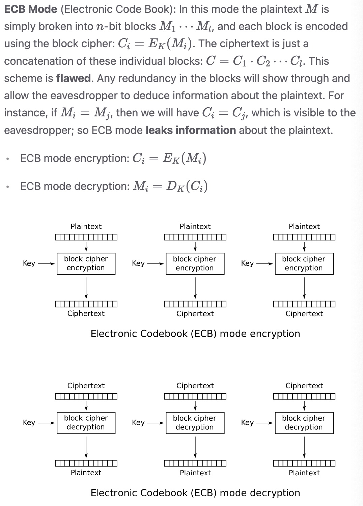
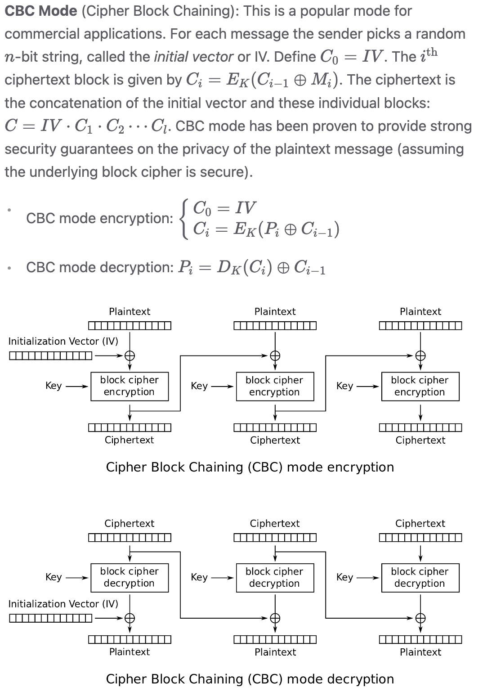
 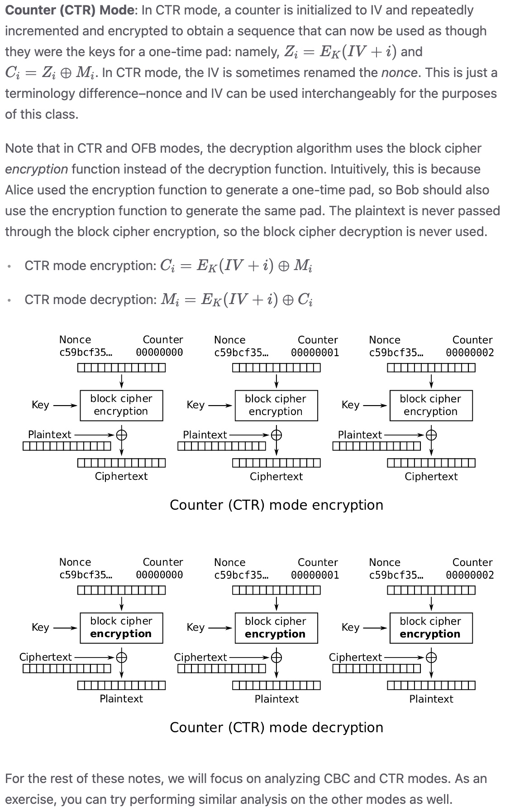
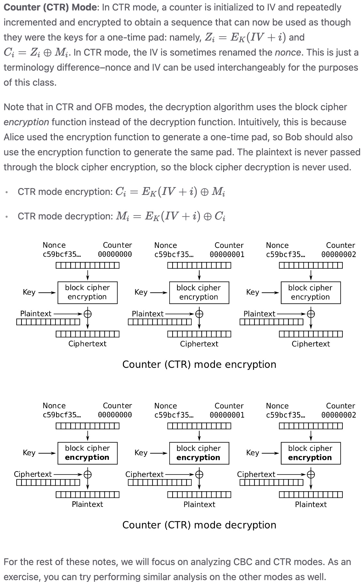
CBC mode encryption cannot be parallelized. By examining the encryption equation C i = E K ( P i ⊕ C i − 1 ) , we can see that to calculate C i , we first need to know the value of C i − 1 . In other words, we have to encrypt the i − 1 th block first before we can encrypt the i th block. CBC mode decryption can be parallelized. Again, we examine the decryption equation P i = D K ( C i ) ⊕ C i − 1 . To calculate P i , we need C i and C i − 1 . Neither of these values need to be calculated–when we’re decrypting, we already have all of the ciphertext blocks. Thus we can compute all the P i in parallel. CTR mode encryption and decryption can both be parallelized. To see this, we can examine the encryption and decryption diagrams. Note that each block cipher only takes the nonce and counter as input, and there is no reliance on any previous ciphertext or plaintext.
Suppose the last block of plaintext is only 100 bits. What if we just XOR the first 100 bits of the previous ciphertext with the 100 bits of plaintext, and ignore the last 28 bits of the previous ciphertext? Now we have a 100-bit input to the block cipher, which only takes 128-bit inputs. This input is undefined for the block cipher.
One correct padding scheme is PKCS#75 padding. In this scheme, we pad the message by the number of padding bytes used. For example, the message above would be padded as 0000000010111333, because 3 bytes of padding were needed. To remove the padding, we note that the message ends in a 3, so 3 bytes of padding were used, so we can unambiguously remove the last 3 bytes of padding. Note that if the message is already a multiple of a block size, an entire new block is appended. This way, there is always one unique padding pattern at the end of the message.
Not all modes need padded plaintext input. For example, let’s look at CTR mode next. Again, suppose we only have 100 bits in your last block of plaintext. This time, we can actually XOR the 100 bits of plaintext with the first 100 bits of block cipher output, and ignore the last 28 bits of block cipher output. Why? Because the result of the XOR never has to be passed into a block cipher again, so we don’t care if it’s slightly shorter than 128 bits. The last ciphertext block will just end up being 100 bits instead of 128 bits, and that’s okay because it’s never used as an input to a block cipher.
Remember that ECB mode is not IND-CPA secure because it is deterministic. Encrypting the same plaintext twice always results in the same output, and this causes information leakage. All the other modes introduce a random initialization vector (IV) that is different on every encryption in order to ensure that encrypting the same plaintext twice with the same key results in different output. This also means that when using secure block cipher modes, it is important to always choose a different, random, unpredictable IV for each new encryption. If the same IV is reused, the scheme becomes deterministic, and information is potentially leaked. The severity of information leakage depends on what messages are being encrypted and which mode is being used.
A cryptographic hash function is a function, H , that when applied on a message, M , can be used to generate a fixed-length “fingerprint” of the message. As such, any change to the message, no matter how small, will change many of the bits of the hash value with there being no detectable patterns as to how the output changes based on specific input changes. In other words, any changes to the message, M , will change the resulting hash-value in some seemingly random way.
The hash function, H , is deterministic, meaning if you compute H ( M ) twice with the same input M , you will always get the same output twice. The hash function is unkeyed, as it only takes in a message M and no secret key. This means anybody can compute hashes on any message.Typically, the output of a hash function is a fixed size: for instance, the SHA256 hash algorithm can be used to hash a message of any size, but always produces a 256-bit hash value. In a secure hash function, the output of the hash function looks like a random string, chosen differently and independently for each message—except that, of course, a hash function is a deterministic procedure.
To understand the intuition behind hash functions, let’s take a look at one of its many uses: document comparisons. Suppose Alice and Bob both have a large, 1 GB document and wanted to know whether the files were the same. While they could go over each word in the document and manually compare the two, hashes provide a quick and easy alternative. Alice and Bob could each compute a hash over the document and securely communicate the hash values to one another. Then, since hash functions are deterministic, if the hashes are the same, then the files must be the same since they have the same “fingerprint”. On the other hand, if the hashes are different, it must be the case that the files are different. Determinism in hash functions ensures that providing the same input twice (i.e. providing the same document) will result in the same hash value; however, providing different inputs (i.e. providing two different documents) will result in two different hash values.
One-way: The hash function can be computed efficiently: Given x , it is easy to compute H ( x ) . However, given a hash output y , it is infeasible to find any input x such that H ( x ) = y . (This property is also known as “preimage resistant.”) Intuitively, the one-way property claims that given an output of a hash function, it is infeasible for an adversary to find any input that hashes to the given output.
Second preimage resistant: Given an input x , it is infeasible to find another input x ′ such that x ′ ≠ x but H ( x ) = H ( x ′ ) . This property is closely related to preimage resistance; the difference is that here the adversary also knows a starting point, x , and wishes to tweak it to x ′ in order to produce the same hash—but cannot. Intuitively, the second preimage resistant property claims that given an input, it is infeasible for an adversary to find another input that has the same hash value as the original input.
Collision resistant: It is infeasible to find any pair of messages x , x ′ such that x ′ ≠ x but H ( x ) = H ( x ′ ) . Again, this property is closely related to the previous ones. Here, the difference is that the adversary can freely choose their starting point, x , potentially designing it specially to enable finding the associated x ′ —but again cannot. Intuitively, the collision resistance property claims that it is infeasible for an adversary to find any two inputs that both hash to the same value. While it is impossible to design a hash function that has absolutely no collisions since there are more inputs than outputs (remember the pigeonhole principle), it is possible to design a hash function that makes finding collisions infeasible for an attacker.
Cryptographic hashes have evolved over time. One of the earliest hash functions, MD5 (Message Digest 5) was broken years ago. The slightly more recent SHA1 (Secure Hash Algorithm) was broken in 2017, although by then it was already suspected to be insecure. Systems which rely on MD5 or SHA1 actually resisting attackers are thus considered insecure. Outdated hashes have also proven problematic in non-cryptographic systems. The git version control program, for example, identifies identical files by checking if the files produce the same SHA1 hash. This worked just fine until someone discovered how to produce SHA1 collisions.
Today, there are two primary “families” of hash algorithms in common use that are believed to be secure: SHA2 and SHA3. Within each family, there are differing output lengths. SHA-256, SHA-384, and SHA-512 are all instances of the SHA2 family with outputs of 256b, 384b, and 512b respectively, while SHA3-256, SHA3-384, and SHA3-512 are the SHA3 family members.
In general, we prefer using a hash function that is related to the length of any associated symmetric key algorithm. By relating the hash function’s output length with the symmetric encryption algorithm’s key length, we can ensure that it is equally difficult for an attacker to break either scheme. For example, if we are using AES-128, we should use SHA-256 or SHA3-256. Assuming both functions are secure, it takes 2 128 operations to brute-force a 128 bit key and 2 128 operations to generate a hash collision on a 256 bit hash function. For longer key lengths, however, we may relax the hash difficulty. For example, with 256b AES, the NSA uses SHA-384, not SHA-512, because, let’s face it, 2 192 operations is already a hugely impractical amount of computation.
When building cryptographic schemes that guarantee integrity and authentication, the threat we’re concerned about is adversaries who send messages pretending to be from a legitimate participant (spoofing) or who modify the contents of a message sent by a legitimate participant (tampering). To address these threats, we will introduce cryptographic schemes that enable the recipient to detect spoofing and tampering. In this section, we will define message authentication codes (MACs) and show how they guarantee integrity and authenticity. Because MACs are a symmetric-key cryptographic primitive, in this section we can assume that Alice and Bob share a secret key that is not known to anyone else. Later we will see how Alice and Bob might securely exchange a shared secret key over an insecure communication channel, but for now you can assume that only Alice and Bob know the value of the secret key.
A MAC is a keyed checksum of the message that is sent along with the message. It takes in a fixed-length secret key and an arbitrary-length message, and outputs a fixed-length checksum. A secure MAC has the property that any change to the message will render the checksum invalid.
Formally, the MAC on a message M is a value F ( K , M ) computed from K and M ; the value F ( K , M ) is called the tag for M or the MAC of M . Typically, we might use a 128-bit key K and 128-bit tags.
When Alice wants to send a message with integrity and authentication, she first computes a MAC on the message T = F ( K , M ) . She sends the message and the MAC ⟨ M , T ⟩ to Bob. When Bob receives ⟨ M , T ⟩ , Bob will recompute F ( K , M ) using the M he received and check that it matches the MAC T he received. If it matches, Bob will accept the message M as valid, authentic, and untampered; if F ( K , M ) ≠ T , Bob will ignore the message M and presume that some tampering or message corruption has occurred. Note that MACs must be deterministic for correctness–when Alice calculates T = F ( K , M ) and sends ⟨ M , T ⟩ to Alice, Bob should get the same result when he calculates F ( K , M ) with the same K and M .
Given a secure MAC algorithm F , if the attacker replaces M by some other message M ′ , then the tag will almost certainly1 no longer be valid: in particular, F ( K , M ) ≠ F ( K , M ′ ) for any M ′ ≠ M .
More generally, there will be no way for the adversary to modify the message and then make a corresponding modification to the tag to trick Bob into accepting the modified message: given M and T = F ( K , M ) , an attacker who does not know the key K should be unable to find a different message M ′ and a tag T ′ such that T ′ is a valid tag on M ′ (i.e., such that T ′ = F ( K , M ′ ) ). Secure MACs are designed to ensure that even small changes to the message make unpredictable changes to the tag, so that the adversary cannot guess the correct tag for their malicious message M ′ .
Recall that MACs are deterministic–if Alice calculates F ( K , M ) twice on the same message M , she will get the same MAC twice. This means that an attacker who sees a pair M , F ( K , M ) will know a valid MAC for the message M . However, if the MAC is secure, the attacker should be unable to create valid MACs for messages that they have never seen before.
More generally, secure MACs are designed to be secure against known-plaintext attacks. For instance, suppose an adversary Eve eavesdrops on Alice’s communications and observes a number of messages and their corresponding tags: ⟨ M 1 , T 1 ⟩ , ⟨ M 2 , T 2 ⟩ , … , ⟨ M n , T n ⟩ , where T i = F ( K , M i ) . Then Eve has no hope of finding some new message M ′ (such that M ′ ∉ { M 1 , … , M n } ) and a corresponding value T ′ such that T ′ is the correct tag on M ′ (i.e., such that T ′ = F ( K , M ′ ) ). The same is true even if Eve was able to choose the M i ’s. In other words, even though Eve may know some valid MACs ⟨ M n , T n ⟩ , she still cannot generate valid MACs for messages she has never seen before.
In AES-EMAC, the key K is 256 bits, viewed as a pair of 128-bit AES keys: K = ⟨ K 1 , K 2 ⟩ . The message M is decomposed into a sequence of 128-bit blocks: $$M = P_1
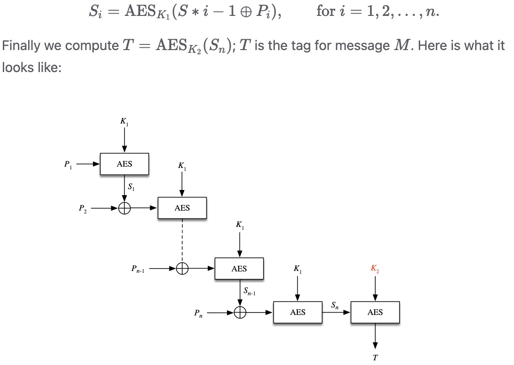
One of the best MAC constructions available is the HMAC, or Hash Message Authentication Code, which uses the cryptographic properties of a cryptographic hash function to construct a secure MAC algorithm. HMAC is an excellent construction because it combines the benefits of both a MAC and the underlying hash. Without the key, the tag does not leak information about the message. Even with the key, it is computationally intractable to reconstruct the message from the hash output. There are several specific implementations of HMAC that use different cryptographic hash functions: for example, HMAC_SHA256 uses SHA256 as the underlying hash, while\ HMAC_SHA3_256 uses SHA3 in 256 bit mode as the underlying hash function. The choice of underlying hash depends on the application. For example, if we are using HMACs with a block cipher, we would want to choose an HMAC whose output is twice the length of the keys used for the associated block cipher, so if we are encrypting using AES_192 we should use HMAC_SHA_384 or HMAC_SHA3_384.
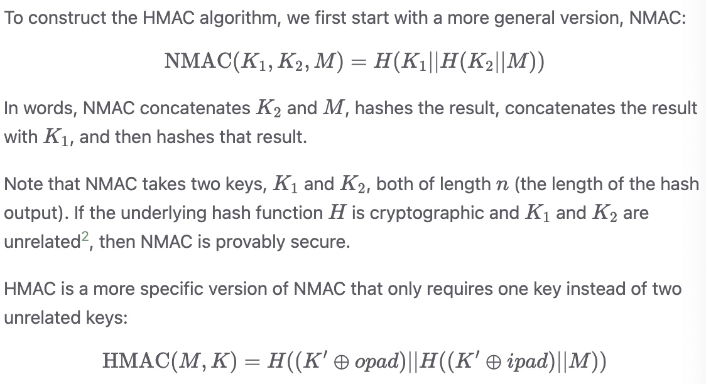
The HMAC algorithm actually supports a variable-length key K . However, NMAC uses K 1 and K 2 that are the same length as the hash output n , so we first transform K to be length n . If K is shorter than n bits, we can pad K with zeros until it is n bits. If K is longer than n bits, we can hash K to make it n bits. The transformed n -bit version of K is now denoted as K ′.
Next, we derive two unrelated keys from K ′ . It turns out that XORing K ′ with two different pads is sufficient to satisfy the definition of “unrelated” used in the NMAC security proof. The HMAC algorithm uses two hardcoded pads, opad (outer pad) and ipad (inner pad), to generate two unrelated keys from a single key. The first key is K 1 = K ′ ⊕ o p a d , and the second key is K 2 = K ′ ⊕ i p a d . opad is the byte 0x5c repeated until it reaches n bits. Similarly, ipad is the byte 0x36 repeated until it reaches n bits.
In words, HMAC takes the key and pads it or hashes it to length n . Then, HMAC takes the resulting modified key, XORs it with the ipad, concatenates the message, and hashes the resulting string. Next, HMAC takes the modified key, XORs it with the opad, and then concatenates it to the previous hash. Hash this final string to get the result.
A MAC does not guarantee confidentiality on the message M to which it is applied. In the examples above, Alice and Bob have been exchanging non-encrypted plaintext messages with MACs attached to each message. The MACs provide integrity and authenticity, but they do nothing to hide the contents of the actual message. In general, MACs have no confidentiality guarantees–given F ( K , M ) , there is no guarantee that the attacker cannot learn something about M.
There is no notion of “reversing” or “decrypting” a MAC, because both Alice and Bob use the same algorithm to generate MACs. However, there is nothing that says a MAC algorithm can’t be reversed if you know the key. For example, with AES-MAC it is clear that if the message is a single block, you can run the algorithm in reverse to go from the tag to the message. Depending on the particular MAC algorithm, this notion of reversing a MAC might also lead to leakage of the original message. There are some MAC algorithms that don’t leak information about the message because of the nature of the underlying implementation. For example, if the algorithm directly applies a block cipher, the block cipher has the property that it does not leak information about the plaintext. Similarly, HMAC does not leak information about the message, since it maintains the properties of the cryptographic hash function.
An authenticated encryption scheme is a scheme that simultaneously guarantees confidentiality and integrity on a message. As you might expect, symmetric-key authenticated encryption modes usually combine a block cipher mode (to guarantee confidentiality) and a MAC (to guarantee integrity and authenticity).
Suppose we have an IND-CPA secure encryption scheme E n c that guarantees confidentiality, and an unforgeable MAC scheme M A C that guarantees integrity and authenticity. There are two main approaches to authenticated encryption: encrypt-then-MAC and MAC-then-encrypt.
In the encrypt-then-MAC approach, we first encrypt the plaintext, and then produce a MAC over the ciphertext. In other words, we send the two values ⟨ E n c K 1 ( M ) , M A C K 2 ( E n c K 1 ( M ) ) ⟩ . This approach guarantees ciphertext integrity–an attacker who tampers with the ciphertext will be detected by the MAC on the ciphertext. This means that we can detect that the attacker has tampered with the message without decrypting the modified ciphertext. Additionally, the original message is kept confidential since neither value leaks information about the plaintext. The MAC value might leak information about the ciphertext, but that’s fine; we already know that the ciphertext doesn’t leak anything about the plaintext.
In the MAC-then-encrypt approach, we first MAC the message, and then encrypt the message and the MAC together. In other words, we send the value $$\mathsf{Enc}_{K_1}(M \mathsf{MAC}_{K_2}(M))$$. Although both the message and the MAC are kept confidential, this approach does not have ciphertext integrity, since only the original message was tagged. This means that we’ll only detect if the message is tampered after we decrypt it. This may not be desirable in some applications, because you would be running the decryption algorithm on arbitrary attacker inputs.
Although both approaches are theoretically secure if applied correctly, in practice, the MAC-then-Encrypt approach has been attacked through side channel vectors. In a side channel attack, improper usage of a cryptographic scheme causes some information to leak through some other means besides the algorithm itself, such as the amount of computation time taken or the error messages returned. One example of this attack was a padding oracle attack against a particular TLS implementation using the MAC-then-encrypt approach. Because of the possibility of such attacks, encrypt-then-MAC is generally the better approach. In both approaches, the encryption and MAC functions should use different keys, because using the same key in an authenticated encryption scheme makes the scheme vulnerable to a large category of potential attacks. These attacks take advantage of the fact that two different algorithms are called with the same key, as well as the properties of the particular encryption and MAC algorithms, to potentially leak information about the original message. The easiest way to avoid this category of attacks is to simply use different keys for the encryption and MAC functions.
There are also some special block cipher operation modes, known as AEAD (Authenticated Encryption with Additional Data) that, in addition to providing confidentiality like other appropriate block cipher modes, also provide integrity/authenticity.
The “additional data” component means that the integrity is provided not just over the encrypted portions of the message but some additional unencrypted data. For example, if Alice wants to send a message to Bob, she may want to include that the message is "From Alice to Bob" in plaintext (for the benefit of the system that routes the message from Alice to Bob) but also include it in the set of data protected by the authentication. While powerful, using these modes improperly will lead to catastrophic failure in security, since a mistake will lead to a loss of both confidentiality and integrity at the same time. One such mode is called AES-GCM (Galois Counter Mode). The specifics are out of scope for these notes, but at a high level, AES-GCM is a stream cipher that operates similarly to AES-CTR (counter) mode. The security properties of AES-GCM are also similar to CTR–in particular, IV reuse also destroys the security of AES-GCM. Since the built-in MAC in AES-GCM is also a function of the CTR mode encryption, improper use of AES-GCM causes loss of both confidentiality and integrity.